Chapter 11: Mechanisms of Microbial Genetics¶
Introduction¶
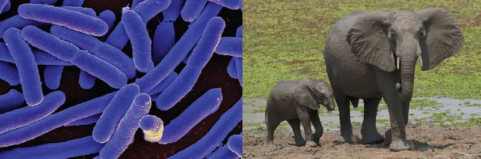
In 1954, French scientist and future Nobel laureate Jacques Monod (1910–1976) famously said, “What is true in E. coli is true in the elephant,” suggesting that the biochemistry of life was maintained throughout evolution and is shared in all forms of known life. Since Monod’s famous statement, we have learned a great deal about the mechanisms of gene regulation, expression, and replication in living cells. All cells use DNA for information storage, share the same genetic code, and use similar mechanisms to replicate and express it. Although many aspects of genetics are universally shared, variations do exist among contemporary genetic systems. We now know that within the shared overall theme of the genetic mechanism, there are significant differences among the three domains of life: Eukarya, Archaea, and Bacteria. Additionally, viruses, cellular parasites but not themselves living cells, show dramatic variation in their genetic material and the replication and gene expression processes. Some of these differences have allowed us to engineer clinical tools such as antibiotics and antiviral drugs that specifically inhibit the reproduction of pathogens yet are harmless to their hosts.
11.1 The Functions of Genetic Material¶
Learning Objectives
By the end of this section, you will be able to:
- Explain the two functions of the genome
- Explain the meaning of the central dogma of molecular biology
- Differentiate between genotype and phenotype and explain how environmental factors influence phenotype
Clinical Focus: Part 1
Mark is 60-year-old software engineer who suffers from type II diabetes, which he monitors and keeps under control largely through diet and exercise. One spring morning, while doing some gardening, he scraped his lower leg while walking through blackberry brambles. He continued working all day in the yard and did not bother to clean the wound and treat it with antibiotic ointment until later that evening. For the next 2 days, his leg became increasingly red, swollen, and warm to the touch. It was sore not only on the surface, but deep in the muscle. After 24 hours, Mark developed a fever and stiffness in the affected leg. Feeling increasingly weak, he called a neighbor, who drove him to the emergency department.
- Did Mark wait too long to seek medical attention? At what point do his signs and symptoms warrant seeking medical attention?
- What types of infections or other conditions might be responsible for Mark’s symptoms?
Jump to the next Clinical Focus box.
DNA serves two essential functions that deal with cellular information. First, DNA is the genetic material responsible for inheritance and is passed from parent to offspring for all life on earth. To preserve the integrity of this genetic information, DNA must be replicated with great accuracy, with minimal errors that introduce changes to the DNA sequence. A genome contains the full complement of DNA within a cell and is organized into smaller, discrete units called genes that are arranged on chromosomes and plasmids. The second function of DNA is to direct and regulate the construction of the proteins necessary to a cell for growth and reproduction in a particular cellular environment.
A gene is composed of DNA that is “read” or transcribed to produce an RNA molecule during the process of transcription. One major type of RNA molecule, called messenger RNA (mRNA), provides the information for the ribosome to catalyze protein synthesis in a process called translation. The processes of transcription and translation are collectively referred to as gene expression. Gene expression is the synthesis of a specific protein with a sequence of amino acids that is encoded in the gene. The flow of genetic information from DNA to RNA to protein is described by the central dogma (Figure 11.2). This central dogma of molecular biology further elucidates the mechanism behind Beadle and Tatum’s “one gene-one enzyme” hypothesis (see Using Microorganisms to Discover the Secrets of Life). Each of the processes of replication, transcription, and translation includes the stages of 1) initiation, 2) elongation (polymerization), and 3) termination. These stages will be described in more detail in this chapter.
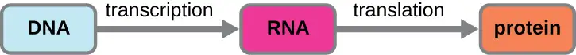
A cell’s genotype is the full collection of genes it contains, whereas its phenotype is the set of observable characteristics that result from those genes. The phenotype is the product of the array of proteins being produced by the cell at a given time, which is influenced by the cell’s genotype as well as interactions with the cell’s environment. Genes code for proteins that have functions in the cell. Production of a specific protein encoded by an individual gene often results in a distinct phenotype for the cell compared with the phenotype without that protein. For this reason, it is also common to refer to the genotype of an individual gene and its phenotype. Although a cell’s genotype remains constant, not all genes are used to direct the production of their proteins simultaneously. Cells carefully regulate expression of their genes, only using genes to make specific proteins when those proteins are needed (Figure 11.3).
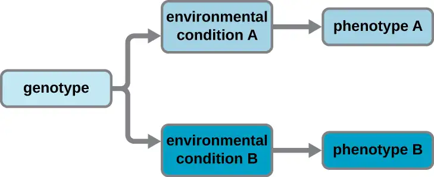
Check Your Understanding
- What are the two functions of DNA?
- Distinguish between the genotype and phenotype of a cell.
- How can cells have the same genotype but differ in their phenotype?
Eye on Ethics: Use and Abuse of Genome Data
Why can some humans harbor opportunistic pathogens like Haemophilus influenzae, Staphylococcus aureus, or Streptococcus pyogenes, in their upper respiratory tracts but remain asymptomatic carriers, while other individuals become seriously ill when infected? There is evidence suggesting that differences in susceptibility to infection between patients may be a result, at least in part, of genetic differences between human hosts. For example, genetic differences in human leukocyte antigens (HLAs) and red blood cell antigens among hosts have been implicated in different immune responses and resulting disease progression from infection with H. influenzae.
Because the genetic interplay between pathogen and host may contribute to disease outcomes, understanding differences in genetic makeup between individuals may be an important clinical tool. Ecological genomics is a relatively new field that seeks to understand how the genotypes of different organisms interact with each other in nature. The field answers questions about how gene expression of one organism affects gene expression of another. Medical applications of ecological genomics will focus on how pathogens interact with specific individuals, as opposed to humans in general. Such analyses would allow medical professionals to use knowledge of an individual’s genotype to apply more individualized plans for treatment and prevention of disease.
With the advent of next-generation sequencing, it is relatively easy to obtain the entire genomic sequences of pathogens; a bacterial genome can be sequenced in as little as a day.1 The speed and cost of sequencing the human genome has also been greatly reduced and, already, individuals can submit samples to receive extensive reports on their personal genetic traits, including ancestry and carrier status for various genetic diseases. As sequencing technologies progress further, such services will continue to become less expensive, more extensive, and quicker.
However, as this day quickly approaches, there are many ethical concerns with which society must grapple. For example, should genome sequencing be a standard practice for everybody? Should it be required by law or by employers if it will lower health-care costs? If one refuses genome sequencing, do they forfeit their right to health insurance coverage? For what purposes should the data be used? Who should oversee proper use of these data? If genome sequencing reveals predisposition to a particular disease, do insurance companies have the right to increase rates? Will employers treat an employee differently? Knowing that environmental influences also affect disease development, how should the data on the presence of a particular disease-causing allele in an individual be used ethically? The Genetic Information Nondiscrimination Act of 2008 (GINA) currently prohibits discriminatory practices based on genetic information by both health insurance companies and employers. However, GINA does not cover life, disability, or long-term care insurance policies. Clearly, all members of society must continue to engage in conversations about these issues so that such genomic data can be used to improve health care while simultaneously protecting an individual’s rights.
11.2 DNA Replication¶
Learning Objectives
By the end of this section, you will be able to:
- Explain the meaning of semiconservative DNA replication
- Explain why DNA replication is bidirectional and includes both a leading and lagging strand
- Explain why Okazaki fragments are formed
- Describe the process of DNA replication and the functions of the enzymes involved
- Identify the differences between DNA replication in bacteria and eukaryotes
- Explain the process of rolling circle replication
The elucidation of the structure of the double helix by James Watson and Francis Crick in 1953 provided a hint as to how DNA is copied during the process of replication. Separating the strands of the double helix would provide two templates for the synthesis of new complementary strands, but exactly how new DNA molecules were constructed was still unclear. In one model, semiconservative replication, the two strands of the double helix separate during DNA replication, and each strand serves as a template from which the new complementary strand is copied; after replication, each double-stranded DNA includes one parental or “old” strand and one “new” strand. There were two competing models also suggested: conservative and dispersive, which are shown in Figure 11.4.
![Diagram showing 3 models of DNA replication. In the conservative model the original double helix produces two double helices; one of which has two of the parent strands and one of which has two of the new strands. Another round produces 4 helices; one of which has two of the parent strands and three of which have all new strands. In semiconservative replication the first round leads to two double helices each with one old strand and one new strand. The next round leads to four double helices; two of these have an old and a new strand and two have all new strands. In dispersive replication each new round of replication results in strands with random bits from the parent strand and random bits of new strands.](img/osc-microbio-11-02-dnarep.webp)
Matthew Meselson (1930–) and Franklin Stahl (1929–) devised an experiment in 1958 to test which of these models correctly represents DNA replication (Figure 11.5). They grew E. coli for several generations in a medium containing a “heavy” isotope of nitrogen (15N) that was incorporated into nitrogenous bases and, eventually, into the DNA. This labeled the parental DNA. The E. coli culture was then shifted into a medium containing 14N and allowed to grow for one generation. The cells were harvested and the DNA was isolated. The DNA was separated by ultracentrifugation, during which the DNA formed bands according to its density. DNA grown in 15N would be expected to form a band at a higher density position than that grown in 14N. Meselson and Stahl noted that after one generation of growth in 14N, the single band observed was intermediate in position in between DNA of cells grown exclusively in 15N or 14N. This suggested either a semiconservative or dispersive mode of replication. Some cells were allowed to grow for one more generation in 14N and spun again. The DNA harvested from cells grown for two generations in 14N formed two bands: one DNA band was at the intermediate position between 15N and 14N, and the other corresponded to the band of 14N DNA. These results could only be explained if DNA replicates in a semiconservative manner. If DNA replication was dispersive, a single purple band positioned closer to the red 1414 would have been observed, as more 14 was added in a dispersive manner to replace 15. Therefore, the other two models were ruled out. As a result of this experiment, we now know that during DNA replication, each of the two strands that make up the double helix serves as a template from which new strands are copied. The new strand will be complementary to the parental or “old” strand. The resulting DNA molecules have the same sequence and are divided equally into the two daughter cells.
![A diagram explaining the Meselson Stahl experiment. In the first part of the experiment DNA is replicated in the presence of heavy 15N medium. This produces all heavy DNA strands. Next they moved the cells to light 14N medium. If DNA was replicated conservatively, one would expect to see one heavy band and one light band. However, they saw only a medium size band. This is consistent with semiconservative and dispersive replication. Finally, they allowed the bacteria to undergo another round of replication in the light medium. If DNA was replicated dispersively, one would expect only a medium size band. However, they saw a medium band and a light band. The only mechanism that explains these results is semi-conservative replication.](img/osc-microbio-11-02-messtahl.webp)
Check Your Understanding
- What would have been the conclusion of Meselson and Stahl’s experiment if, after the first generation, they had found two bands of DNA?
DNA Replication in Bacteria¶
DNA replication has been well studied in bacteria primarily because of the small size of the genome and the mutants that are available. E. coli has 4.6 million base pairs (Mbp) in a single circular chromosome and all of it is replicated in approximately 42 minutes, starting from a single origin of replication and proceeding around the circle bidirectionally (i.e., in both directions). This means that approximately 1000 nucleotides are added per second. The process is quite rapid and occurs with few errors.
DNA replication uses a large number of proteins and enzymes (Table 11.1). One of the key players is the enzyme DNA polymerase, also known as DNA pol. In bacteria, three main types of DNA polymerases are known: DNA pol I, DNA pol II, and DNA pol III. It is now known that DNA pol III is the enzyme required for DNA synthesis; DNA pol I and DNA pol II are primarily required for repair. DNA pol III adds deoxyribonucleotides each complementary to a nucleotide on the template strand, one by one to the 3’-OH group of the growing DNA chain. The addition of these nucleotides requires energy. This energy is present in the bonds of three phosphate groups attached to each nucleotide (a triphosphate nucleotide), similar to how energy is stored in the phosphate bonds of adenosine triphosphate (ATP) (Figure 11.6). When the bond between the phosphates is broken and diphosphate is released, the energy released allows for the formation of a covalent phosphodiester bond by dehydration synthesis between the incoming nucleotide and the free 3’-OH group on the growing DNA strand.
![Diagram of dGTP. In the center is deoxyribose which is a pentagon shaped sugar. The top point has an oxygen. Then, moving around the shape are carbons 1, 2, 3, and 4; carbon 5 is attached to carbon 4 but not in the ring. Attached to carbon 1 is a structure made of 2 carbon and nitrogen rings bound along their ends; this is guanine. Carbon 2 has only Hs attached to it. Carbon 3 has an H and an OH. Carbon 4 has an N and Carbon 5. Carbon 5 is attached to 3 phosphate groups in a row (labeled triphosphate). Each phosphate group is made of phosphorus attached to 4 oxygen atoms.](img/osc-microbio-11-01-dgtp.webp)
Initiation¶
The initiation of replication occurs at specific nucleotide sequence called the origin of replication, where various proteins bind to begin the replication process. E. coli has a single origin of replication (as do most prokaryotes), called oriC, on its one chromosome. The origin of replication is approximately 245 base pairs long and is rich in adenine-thymine (AT) sequences.
Some of the proteins that bind to the origin of replication are important in making single-stranded regions of DNA accessible for replication. Chromosomal DNA is typically wrapped around histones (in eukaryotes and archaea) or histone-like proteins (in bacteria), and is supercoiled, or extensively wrapped and twisted on itself. This packaging makes the information in the DNA molecule inaccessible. However, enzymes called topoisomerases change the shape and supercoiling of the chromosome. For bacterial DNA replication to begin, the supercoiled chromosome is relaxed by topoisomerase II, also called DNA gyrase. An enzyme called helicase then separates the DNA strands by breaking the hydrogen bonds between the nitrogenous base pairs. Recall that AT sequences have fewer hydrogen bonds and, hence, have weaker interactions than guanine-cytosine (GC) sequences. These enzymes require ATP hydrolysis. As the DNA opens up, Y-shaped structures called replication forks are formed. Two replication forks are formed at the origin of replication, allowing for bidirectional replication and formation of a structure that looks like a bubble when viewed with a transmission electron microscope; as a result, this structure is called a replication bubble. The DNA near each replication fork is coated with single-stranded binding proteins to prevent the single-stranded DNA from rewinding into a double helix.
Once single-stranded DNA is accessible at the origin of replication, DNA replication can begin. However, DNA pol III is able to add nucleotides only in the 5’ to 3’ direction (a new DNA strand can be only extended in this direction). This is because DNA polymerase requires a free 3’-OH group to which it can add nucleotides by forming a covalent phosphodiester bond between the 3’-OH end and the 5’ phosphate of the next nucleotide. This also means that it cannot add nucleotides if a free 3’-OH group is not available, which is the case for a single strand of DNA. The problem is solved with the help of an RNA sequence that provides the free 3’-OH end. Because this sequence allows the start of DNA synthesis, it is appropriately called the primer. The primer is five to 10 nucleotides long and complementary to the parental or template DNA. It is synthesized by RNA primase, which is an RNA polymerase. Unlike DNA polymerases, RNA polymerases do not need a free 3’-OH group to synthesize an RNA molecule. Now that the primer provides the free 3’-OH group, DNA polymerase III can now extend this RNA primer, adding DNA nucleotides one by one that are complementary to the template strand (Figure 11.4).
Elongation¶
During elongation in DNA replication, the addition of nucleotides occurs at its maximal rate of about 1000 nucleotides per second. DNA polymerase III can only extend in the 5’ to 3’ direction, which poses a problem at the replication fork. The DNA double helix is antiparallel; that is, one strand is oriented in the 5’ to 3’ direction and the other is oriented in the 3’ to 5’ direction (see Structure and Function of DNA). During replication, one strand, which is complementary to the 3’ to 5’ parental DNA strand, is synthesized continuously toward the replication fork because polymerase can add nucleotides in this direction. This continuously synthesized strand is known as the leading strand. The other strand, complementary to the 5’ to 3’ parental DNA, grows away from the replication fork, so the polymerase must move back toward the replication fork to begin adding bases to a new primer, again in the direction away from the replication fork. It does so until it bumps into the previously synthesized strand and then it moves back again (Figure 11.7). These steps produce small DNA sequence fragments known as Okazaki fragments, each separated by RNA primer. Okazaki fragments are named after the Japanese research team and married couple Reiji and Tsuneko Okazaki, who first discovered them in 1966. The strand with the Okazaki fragments is known as the lagging strand, and its synthesis is said to be discontinuous.
The leading strand can be extended from one primer alone, whereas the lagging strand needs a new primer for each of the short Okazaki fragments. The overall direction of the lagging strand will be 3’ to 5’, and that of the leading strand 5’ to 3’. A protein called the sliding clamp holds the DNA polymerase in place as it continues to add nucleotides. The sliding clamp is a ring-shaped protein that binds to the DNA and holds the polymerase in place. Beyond its role in initiation, topoisomerase also prevents the overwinding of the DNA double helix ahead of the replication fork as the DNA is opening up; it does so by causing temporary nicks in the DNA helix and then resealing it. As synthesis proceeds, the RNA primers are replaced by DNA. The primers are removed by the exonuclease activity of DNA polymerase I, and the gaps are filled in. The nicks that remain between the newly synthesized DNA (that replaced the RNA primer) and the previously synthesized DNA are sealed by the enzyme DNA ligase that catalyzes the formation of covalent phosphodiester linkage between the 3’-OH end of one DNA fragment and the 5’ phosphate end of the other fragment, stabilizing the sugar-phosphate backbone of the DNA molecule.
![Diagram of DNA replication. A small inset at the top shows a double strand of DNA separated in the center forming a bubble; the DNA is double stranded on either side of the bubble. The origin of replication is in the midway point of the bubble. On the top strand a solid arrow points to the left from the origin; this is the leading strand. On the right of the origin of replication are short arrows pointing to the left; this is the lagging strand. On the bottom strand a solid arrow pointing to the right from the origin is labeled leading strand and short arrows pointing to the right on the other side of the origin are labeled lagging strands. A larger image shows just the left half of the bubble. The double stranded DNA is no the far left and is labeled 5’ for the top strand and 3’ for the bottom strand. An enzyme to the very far left I is labeled topoisomerase/gyrase. At the point where the double stranded regions splits is a triangle shape labeled helicase. Next to that are smaller shapes labeled single-stranded binding proteins. The top strand shows continuous synthesis of the leading strand; this is shown as a solid arrow under the top strand. The arrow has a 5’ at the right end and a 3’ at the left end. The template strand at the top has a 3’ at the right and a 5’ at the left. At the end of the arrow (near where the DNA is newly being separated by the helicase) is DNA polymerase 3 and a sliding clamp that span both strands. The bottom strand of DNA has more components. Just after the single stranded binding proteins is RNA primase which attaches RNA primer (shown as a green arrow). Further down the lagging strand template is an existing RNA primer with DNA polymerase III and a sliding clamp spanning primer and the template strand. The polymerase is building a new strand of DNA from the left side (5’) to the right side (3’). Further to the right is a long piece made of RNA primer, then new DNA, then RNA primer, then new DNA all connected. Each of the DNA/RNA combinations are okazaki fragments made in the discontinuous synthesis of the lagging strand. DNA polymerase I is attached to the RNA primer in the center and is replacing it with DNA nucleotides. DNA ligase then binds the individual strands of new DNA together. This is shown in a close-up as two double helices that have all the correct letters in place, but one is missing a connection between two of the nucleotides (this is called a single-stranded gap). DNA ligase forms this last bond and the gap is sealed.](img/osc-microbio-11-02-repfork.webp)
Termination¶
Once the complete chromosome has been replicated, termination of DNA replication must occur. Although much is known about initiation of replication, less is known about the termination process. Following replication, the resulting complete circular genomes of prokaryotes are concatenated, meaning that the circular DNA chromosomes are interlocked and must be separated from each other. This is accomplished through the activity of bacterial topoisomerase IV, which introduces double-stranded breaks into DNA molecules, allowing them to separate from each other; the enzyme then reseals the circular chromosomes. The resolution of concatemers is an issue unique to prokaryotic DNA replication because of their circular chromosomes. Because both bacterial DNA gyrase and topoisomerase IV are distinct from their eukaryotic counterparts, these enzymes serve as targets for a class of antimicrobial drugs called quinolones.
Table 11.1
| The Molecular Machinery Involved in Bacterial DNA Replication | |
|---|---|
| Enzyme or Factor | Function |
| DNA pol I | Exonuclease activity removes RNA primer and replaces it with newly synthesized DNA |
| DNA pol III | Main enzyme that adds nucleotides in the 5’ to 3’ direction |
| Helicase | Opens the DNA helix by breaking hydrogen bonds between the nitrogenous bases |
| Ligase | Seals the gaps between the Okazaki fragments on the lagging strand to create one continuous DNA strand |
| Primase | Synthesizes RNA primers needed to start replication |
| Single-stranded binding proteins | Bind to single-stranded DNA to prevent hydrogen bonding between DNA strands, reforming double-stranded DNA |
| Sliding clamp | Helps hold DNA pol III in place when nucleotides are being added |
| Topoisomerase II (DNA gyrase) | Relaxes supercoiled chromosome to make DNA more accessible for the initiation of replication; helps relieve the stress on DNA when unwinding, by causing breaks and then resealing the DNA |
| Topoisomerase IV | Introduces single-stranded break into concatenated chromosomes to release them from each other, and then reseals the DNA |
Check Your Understanding
- Which enzyme breaks the hydrogen bonds holding the two strands of DNA together so that replication can occur?
- Is it the lagging strand or the leading strand that is synthesized in the direction toward the opening of the replication fork?
- Which enzyme is responsible for removing the RNA primers in newly replicated bacterial DNA?
DNA Replication in Eukaryotes¶
Eukaryotic genomes are much more complex and larger than prokaryotic genomes and are typically composed of multiple linear chromosomes (Table 11.2). The human genome, for example, has 3 billion base pairs per haploid set of chromosomes, and 6 billion base pairs are inserted during replication. There are multiple origins of replication on each eukaryotic chromosome (Figure 11.8); the human genome has 30,000 to 50,000 origins of replication. The rate of replication is approximately 100 nucleotides per second—10 times slower than prokaryotic replication.
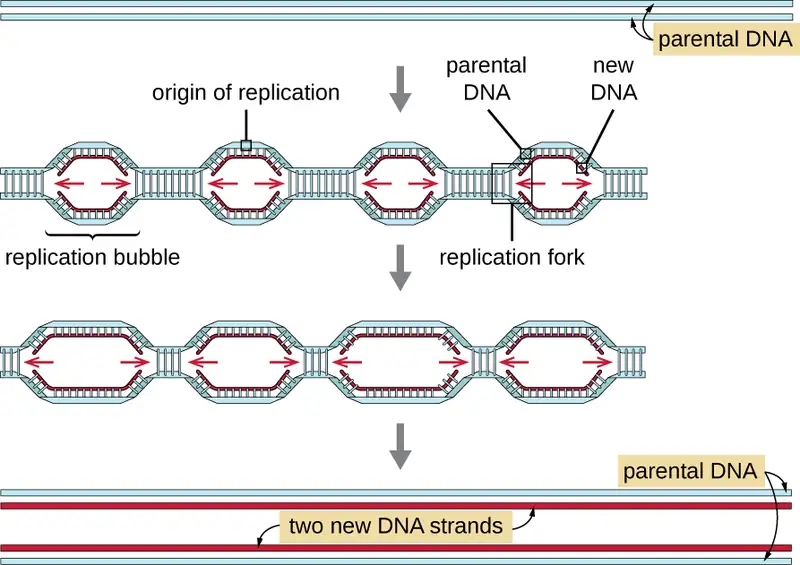
The essential steps of replication in eukaryotes are the same as in prokaryotes. Before replication can start, the DNA has to be made available as a template. Eukaryotic DNA is highly supercoiled and packaged, which is facilitated by many proteins, including histones (see Structure and Function of Cellular Genomes). At the origin of replication, a prereplication complex composed of several proteins, including helicase, forms and recruits other enzymes involved in the initiation of replication, including topoisomerase to relax supercoiling, single-stranded binding protein, RNA primase, and DNA polymerase. Following initiation of replication, in a process similar to that found in prokaryotes, elongation is facilitated by eukaryotic DNA polymerases. The leading strand is continuously synthesized by the eukaryotic polymerase enzyme pol δ, while the lagging strand is synthesized by pol ε. A sliding clamp protein holds the DNA polymerase in place so that it does not fall off the DNA. The enzyme ribonuclease H (RNase H), instead of a DNA polymerase as in bacteria, removes the RNA primer, which is then replaced with DNA nucleotides. The gaps that remain are sealed by DNA ligase.
Because eukaryotic chromosomes are linear, one might expect that their replication would be more straightforward. As in prokaryotes, the eukaryotic DNA polymerase can add nucleotides only in the 5’ to 3’ direction. In the leading strand, synthesis continues until it reaches either the end of the chromosome or another replication fork progressing in the opposite direction. On the lagging strand, DNA is synthesized in short stretches, each of which is initiated by a separate primer. When the replication fork reaches the end of the linear chromosome, there is no place to make a primer for the DNA fragment to be copied at the end of the chromosome. These ends thus remain unpaired and, over time, they may get progressively shorter as cells continue to divide.
The ends of the linear chromosomes are known as telomeres and consist of noncoding repetitive sequences. The telomeres protect coding sequences from being lost as cells continue to divide. In humans, a six base-pair sequence, TTAGGG, is repeated 100 to 1000 times to form the telomere. The discovery of the enzyme telomerase (Figure 11.9) clarified our understanding of how chromosome ends are maintained. Telomerase contains a catalytic part and a built-in RNA template. It attaches to the end of the chromosome, and complementary bases to the RNA template are added on the 3’ end of the DNA strand. Once the 3’ end of the lagging strand template is sufficiently elongated, DNA polymerase can add the nucleotides complementary to the ends of the chromosomes. In this way, the ends of the chromosomes are replicated. In humans, telomerase is typically active in germ cells and adult stem cells; it is not active in adult somatic cells and may be associated with the aging of these cells. Eukaryotic microbes including fungi and protozoans also produce telomerase to maintain chromosomal integrity. For her discovery of telomerase and its action, Elizabeth Blackburn (1948–) received the Nobel Prize for Medicine or Physiology in 2009.
![Diagram of telomerase. The top image shows a long strand of DNA with 5’ on the left and 3’ on the right. The complementary strand is much shorter and shows 3’ on the left and 5’ on the right. A circle labeled telomerase contains a complementary strand that matches the 3’ end of the upper strand and also extends past the 3’ end of the top strand. Caption: Telomerase has an associated RNA that complements the 3’ overhang at the end of the chromosome. Next, the top strand of DNA replicates using the overhang of the strand within the telomerase. Caption: The RNA template is used to synthesize the complementary strand. Next, the telomerase moves to the new 3’ end of the top strand. Caption: Telomerase shifts and the process repeats. Finally, The top DNA strand has multiple extensions. RNA primer binds near the 3’ end and builds a new strand of DNA towards the left until it meets up with the existing strand. Caption: Primase and DNA polymerase synthesize the complementary strand.](img/osc-microbio-11-02-telomerase.webp)
Table 11.2
| Comparison of Bacterial and Eukaryotic Replication | ||
|---|---|---|
| Property | Bacteria | Eukaryotes |
| Genome structure | Single circular chromosome | Multiple linear chromosomes |
| Number of origins per chromosome | Single | Multiple |
| Rate of replication | 1000 nucleotides per second | 100 nucleotides per second |
| Telomerase | Not present | Present |
| RNA primer removal | DNA pol I | RNase H |
| Strand elongation | DNA pol III | pol δ, pol ε |
Link to Learning
This animation compares the process of prokaryotic and eukaryotic DNA replication.
Check Your Understanding
- How does the origin of replication differ between eukaryotes and prokaryotes?
- What polymerase enzymes are responsible for DNA synthesis during eukaryotic replication?
- What is found at the ends of the chromosomes in eukaryotes and why?
DNA Replication of Extrachromosomal Elements: Plasmids and Viruses¶
To copy their nucleic acids, plasmids and viruses frequently use variations on the pattern of DNA replication described for prokaryote genomes. For more information on the wide range of viral replication strategies, see The Viral Life Cycle.
Rolling Circle Replication¶
Whereas many bacterial plasmids (see Unique Characteristics of Prokaryotic Cells) replicate by a process similar to that used to copy the bacterial chromosome, other plasmids, several bacteriophages, and some viruses of eukaryotes use rolling circle replication (Figure 11.10). The circular nature of plasmids and the circularization of some viral genomes on infection make this possible. Rolling circle replication begins with the enzymatic nicking of one strand of the double-stranded circular molecule at the double-stranded origin (dso) site. In bacteria, DNA polymerase III binds to the 3’-OH group of the nicked strand and begins to unidirectionally replicate the DNA using the un-nicked strand as a template, displacing the nicked strand as it does so. Completion of DNA replication at the site of the original nick results in full displacement of the nicked strand, which may then recircularize into a single-stranded DNA molecule. RNA primase then synthesizes a primer to initiate DNA replication at the single-stranded origin (sso) site of the single-stranded DNA (ssDNA) molecule, resulting in a double-stranded DNA (dsDNA) molecule identical to the other circular DNA molecule.
![Diagram of DNA replication. A circle of double stranded DNA has a region labeled SSO near a region labeled DSO. A nick forms in DSO and DNA polymerase III begins copying and displacing the nicked strand. This forms a new ring made of an old and a new strand of DNA; the second old strand of DNA is outside of this ring but eventually rejoins the nicked strand. DNA ligase then separates the dsDNA (synthesis of first strand) and the lone ssDNA. The ssDNA then has the second strand synthesized and become a ds DNA as well.](img/osc-microbio-11-02-rollcircle.webp)
Check Your Understanding
- Is there a lagging strand in rolling circle replication? Why or why not?
11.3 RNA Transcription¶
Learning Objectives
By the end of this section, you will be able to:
- Explain how RNA is synthesized using DNA as a template
- Distinguish between transcription in prokaryotes and eukaryotes
During the process of transcription, the information encoded within the DNA sequence of one or more genes is transcribed into a strand of RNA, also called an RNA transcript. The resulting single-stranded RNA molecule, composed of ribonucleotides containing the bases adenine (A), cytosine (C), guanine (G), and uracil (U), acts as a mobile molecular copy of the original DNA sequence. Transcription in prokaryotes and in eukaryotes requires the DNA double helix to partially unwind in the region of RNA synthesis. The unwound region is called a transcription bubble. Transcription of a particular gene always proceeds from one of the two DNA strands that acts as a template, the so-called antisense strand. The RNA product is complementary to the template strand of DNA and is almost identical to the nontemplate DNA strand, or the sense strand. The only difference is that in RNA, all of the T nucleotides are replaced with U nucleotides; during RNA synthesis, U is incorporated when there is an A in the complementary antisense strand.
Transcription in Bacteria¶
Bacteria use the same RNA polymerase to transcribe all of their genes. Like DNA polymerase, RNA polymerase adds nucleotides one by one to the 3’-OH group of the growing nucleotide chain. One critical difference in activity between DNA polymerase and RNA polymerase is the requirement for a 3’-OH onto which to add nucleotides: DNA polymerase requires such a 3’-OH group, thus necessitating a primer, whereas RNA polymerase does not. During transcription, a ribonucleotide complementary to the DNA template strand is added to the growing RNA strand and a covalent phosphodiester bond is formed by dehydration synthesis between the new nucleotide and the last one added. In E. coli, RNA polymerase comprises six polypeptide subunits, five of which compose the polymerase core enzyme responsible for adding RNA nucleotides to a growing strand. The sixth subunit is known as sigma (σ). The σ factor enables RNA polymerase to bind to a specific promoter, thus allowing for the transcription of various genes. There are various σ factors that allow for transcription of various genes.
Initiation¶
The initiation of transcription begins at a promoter, a DNA sequence onto which the transcription machinery binds and initiates transcription. The nucleotide pair in the DNA double helix that corresponds to the site from which the first 5’ RNA nucleotide is transcribed is the initiation site. Nucleotides preceding the initiation site are designated “upstream,” whereas nucleotides following the initiation site are called “downstream” nucleotides. In most cases, promoters are located just upstream of the genes they regulate. Although promoter sequences vary among bacterial genomes, a few elements are conserved. At the –10 and –35 positions within the DNA prior to the initiation site (designated +1), there are two promoter consensus sequences, or regions that are similar across all promoters and across various bacterial species. The –10 consensus sequence, called the TATA box, is TATAAT. The –35 sequence is recognized and bound by σ.
Elongation¶
The elongation in transcription phase begins when the σ subunit dissociates from the polymerase, allowing the core enzyme to synthesize RNA complementary to the DNA template in a 5’ to 3’ direction at a rate of approximately 40 nucleotides per second. As elongation proceeds, the DNA is continuously unwound ahead of the core enzyme and rewound behind it (Figure 11.11).
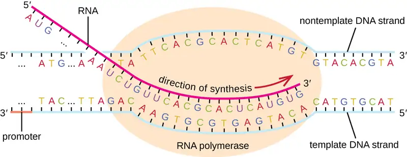
Termination¶
Once a gene is transcribed, the bacterial polymerase must dissociate from the DNA template and liberate the newly made RNA. This is referred to as termination of transcription. The DNA template includes repeated nucleotide sequences that act as termination signals, causing RNA polymerase to stall and release from the DNA template, freeing the RNA transcript.
Check Your Understanding
- Where does σ factor of RNA polymerase bind DNA to start transcription?
- What occurs to initiate the polymerization activity of RNA polymerase?
- Where does the signal to end transcription come from?
Transcription in Eukaryotes¶
Prokaryotes and eukaryotes perform fundamentally the same process of transcription, with a few significant differences (see Table 11.3). Eukaryotes use three different polymerases, RNA polymerases I, II, and III, all structurally distinct from the bacterial RNA polymerase. Each transcribes a different subset of genes. Interestingly, archaea contain a single RNA polymerase that is more closely related to eukaryotic RNA polymerase II than to its bacterial counterpart. Eukaryotic mRNAs are also usually monocistronic, meaning that they each encode only a single polypeptide, whereas prokaryotic mRNAs of bacteria and archaea are commonly polycistronic, meaning that they encode multiple polypeptides.
The most important difference between prokaryotes and eukaryotes is the latter’s membrane-bound nucleus, which influences the ease of use of RNA molecules for protein synthesis. With the genes bound in a nucleus, the eukaryotic cell must transport protein-encoding RNA molecules to the cytoplasm to be translated. Protein-encoding primary transcripts, the RNA molecules directly synthesized by RNA polymerase, must undergo several processing steps to protect these RNA molecules from degradation during the time they are transferred from the nucleus to the cytoplasm and translated into a protein. For example, eukaryotic mRNAs may last for several hours, whereas the typical prokaryotic mRNA lasts no more than 5 seconds.
The primary transcript (also called pre-mRNA) is first coated with RNA-stabilizing proteins to protect it from degradation while it is processed and exported out of the nucleus. The first type of processing begins while the primary transcript is still being synthesized; a special 7-methylguanosine nucleotide, called the 5’ cap, is added to the 5’ end of the growing transcript. In addition to preventing degradation, factors involved in subsequent protein synthesis recognize the cap, which helps initiate translation by ribosomes. Once elongation is complete, another processing enzyme then adds a string of approximately 200 adenine nucleotides to the 3’ end, called the poly-A tail. This modification further protects the pre-mRNA from degradation and signals to cellular factors that the transcript needs to be exported to the cytoplasm.
Eukaryotic genes that encode polypeptides are composed of coding sequences called exons (ex-on signifies that they are expressed) and intervening sequences called introns (int-ron denotes their intervening role). Transcribed RNA sequences corresponding to introns do not encode regions of the functional polypeptide and are removed from the pre-mRNA during processing. It is essential that all of the intron-encoded RNA sequences are completely and precisely removed from a pre-mRNA before protein synthesis so that the exon-encoded RNA sequences are properly joined together to code for a functional polypeptide. If the process errs by even a single nucleotide, the sequences of the rejoined exons would be shifted, and the resulting polypeptide would be nonfunctional. The process of removing intron-encoded RNA sequences and reconnecting those encoded by exons is called RNA splicing and is facilitated by the action of a spliceosome containing small nuclear ribonucleo proteins (snRNPs). Intron-encoded RNA sequences are removed from the pre-mRNA while it is still in the nucleus. Although they are not translated, introns appear to have various functions, including gene regulation and mRNA transport. On completion of these modifications, the mature transcript, the mRNA that encodes a polypeptide, is transported out of the nucleus, destined for the cytoplasm for translation. Introns can be spliced out differently, resulting in various exons being included or excluded from the final mRNA product. This process is known as alternative splicing. The advantage of alternative splicing is that different types of mRNA transcripts can be generated, all derived from the same DNA sequence. In recent years, it has been shown that some archaea also have the ability to splice their pre-mRNA.
Table 11.3
| Comparison of Transcription in Bacteria Versus Eukaryotes | ||
|---|---|---|
| Property | Bacteria | Eukaryotes |
| Number of polypeptides encoded per mRNA | Monocistronic or polycistronic | Exclusively monocistronic |
| Strand elongation | core + σ = holoenzyme | RNA polymerases I, II, or III |
| Addition of 5’ cap | No | Yes |
| Addition of 3’ poly-A tail | No | Yes |
| Splicing of pre-mRNA | No | Yes |
Link to Learning
Visualize how mRNA splicing happens by watching the process in action in this video. See how introns are removed during RNA splicing here.
Check Your Understanding
- In eukaryotic cells, how is the RNA transcript from a gene for a protein modified after it is transcribed?
- Do exons or introns contain information for protein sequences?
Clinical Focus: Part 2
In the emergency department, a nurse told Mark that he had made a good decision to come to the hospital because his symptoms indicated an infection that had gotten out of control. Mark’s symptoms had progressed, with the area of skin affected and the amount of swelling increasing. Within the affected area, a rash had begun, blistering and small gas pockets underneath the outermost layer of skin had formed, and some of the skin was becoming gray. Based on the putrid smell of the pus draining from one of the blisters, the rapid progression of the infection, and the visual appearance of the affected skin, the physician immediately began treatment for necrotizing fasciitis. Mark’s physician ordered a culture of the fluid draining from the blister and also ordered blood work, including a white blood cell count.
Mark was admitted to the intensive care unit and began intravenous administration of a broad-spectrum antibiotic to try to minimize further spread of the infection. Despite antibiotic therapy, Mark’s condition deteriorated quickly. Mark became confused and dizzy. Within a few hours of his hospital admission, his blood pressure dropped significantly and his breathing became shallower and more rapid. Additionally, blistering increased, with the blisters intensifying in color to purplish black, and the wound itself seemed to be progressing rapidly up Mark’s leg.
- What are possible causative agents of Mark’s necrotizing fasciitis?
- What are some possible explanations for why the antibiotic treatment does not seem to be working?
Jump to the next Clinical Focus box. Go back to the previous Clinical Focus box.
11.4 Protein Synthesis (Translation)¶
Learning Objectives
By the end of this section, you will be able to:
- Describe the genetic code and explain why it is considered almost universal
- Explain the process of translation and the functions of the molecular machinery of translation
- Compare translation in eukaryotes and prokaryotes
The synthesis of proteins consumes more of a cell’s energy than any other metabolic process. In turn, proteins account for more mass than any other macromolecule of living organisms. They perform virtually every function of a cell, serving as both functional (e.g., enzymes) and structural elements. The process of translation, or protein synthesis, the second part of gene expression, involves the decoding by a ribosome of an mRNA message into a polypeptide product.
The Genetic Code¶
Translation of the mRNA template converts nucleotide-based genetic information into the “language” of amino acids to create a protein product. A protein sequence consists of 20 commonly occurring amino acids. Each amino acid is defined within the mRNA by a triplet of nucleotides called a codon. The relationship between an mRNA codon and its corresponding amino acid is called the genetic code.
The three-nucleotide code means that there is a total of 64 possible combinations (43, with four different nucleotides possible at each of the three different positions within the codon). This number is greater than the number of amino acids and a given amino acid is encoded by more than one codon (Figure 11.12). This redundancy in the genetic code is called degeneracy. Typically, whereas the first two positions in a codon are important for determining which amino acid will be incorporated into a growing polypeptide, the third position, called the wobble position, is less critical. In some cases, if the nucleotide in the third position is changed, the same amino acid is still incorporated.
Whereas 61 of the 64 possible triplets code for amino acids, three of the 64 codons do not code for an amino acid; they terminate protein synthesis, releasing the polypeptide from the translation machinery. These are called stop codons or nonsense codons. Another codon, AUG, also has a special function. In addition to specifying the amino acid methionine, it also typically serves as the start codon to initiate translation. The reading frame, the way nucleotides in mRNA are grouped into codons, for translation is set by the AUG start codon near the 5’ end of the mRNA. Each set of three nucleotides following this start codon is a codon in the mRNA message.
The genetic code is nearly universal. With a few exceptions, virtually all species use the same genetic code for protein synthesis, which is powerful evidence that all extant life on earth shares a common origin. However, unusual amino acids such as selenocysteine and pyrrolysine have been observed in archaea and bacteria. In the case of selenocysteine, the codon used is UGA (normally a stop codon). However, UGA can encode for selenocysteine using a stem-loop structure (known as the selenocysteine insertion sequence, or SECIS element), which is found at the 3’ untranslated region of the mRNA. Pyrrolysine uses a different stop codon, UAG. The incorporation of pyrrolysine requires the pylS gene and a unique transfer RNA (tRNA) with a CUA anticodon.
![The codon table. On the left is the first letter of the codon (from top to bottom – U, C, A, G). On the top is the second letter (left to right U, C, A, G). On the right is the third letter (in each row, this is designated from top to bottom as U, C, A, G. UUU and UUC are Phe. UUA and UUG are Leu. UCU, UCC, UCA and UCG are Ser. UAU and UAC are Tyr. UAA and UAG are stop. UGU and UGC are Cys. UGA is stop. UGG is Trp. CUU, CUC, CUA, and CUG are Leu. CC, CCC, CCA, and CCG are Pro. CAU and CAC are his. CAA and CAG are Gln. CGU, CGC, CGA, CGG are Arg. AUU, AUC, AUA are Ile, AUG is Met and start. ACU, ACC, ACA, ACG is Thr. AAU AAc, is Asn. AAA, AAG is Lys. AGU, AGC is SEr. AGA, AG is ARg. GUU, GUC, GUA, GUG is Val. GCU, GCC, GCA, GCG, is ala. GAU, GAC is Asp. GAA, GAG is Glu. GGU, GGC, GGA, GGG is Gly.](img/osc-microbio-11-04-gencode.webp)
Check Your Understanding
- How many bases are in each codon?
- What amino acid is coded for by the codon AAU?
- What happens when a stop codon is reached?
The Protein Synthesis Machinery¶
In addition to the mRNA template, many molecules and macromolecules contribute to the process of translation. The composition of each component varies across taxa; for instance, ribosomes may consist of different numbers of ribosomal RNAs (rRNAs) and polypeptides depending on the organism. However, the general structures and functions of the protein synthesis machinery are comparable from bacteria to human cells. Translation requires the input of an mRNA template, ribosomes, tRNAs, and various enzymatic factors.
Ribosomes¶
A ribosome is a complex macromolecule composed of catalytic rRNAs (called ribozymes) and structural rRNAs, as well as many distinct polypeptides. Mature rRNAs make up approximately 50% of each ribosome. Prokaryotes have 70S ribosomes, whereas eukaryotes have 80S ribosomes in the cytoplasm and rough endoplasmic reticulum, and 70S ribosomes in mitochondria and chloroplasts. Ribosomes dissociate into large and small subunits when they are not synthesizing proteins and reassociate during the initiation of translation. In E. coli, the small subunit is described as 30S (which contains the 16S rRNA subunit), and the large subunit is 50S (which contains the 5S and 23S rRNA subunits), for a total of 70S (Svedberg units are not additive). Eukaryote ribosomes have a small 40S subunit (which contains the 18S rRNA subunit) and a large 60S subunit (which contains the 5S, 5.8S and 28S rRNA subunits), for a total of 80S. The small subunit is responsible for binding the mRNA template, whereas the large subunit binds tRNAs (discussed in the next subsection).
Each mRNA molecule is simultaneously translated by many ribosomes, all synthesizing protein in the same direction: reading the mRNA from 5’ to 3’ and synthesizing the polypeptide from the N terminus to the C terminus. The complete structure containing an mRNA with multiple associated ribosomes is called a polyribosome (or polysome). In both bacteria and archaea, before transcriptional termination occurs, each protein-encoding transcript is already being used to begin synthesis of numerous copies of the encoded polypeptide(s) because the processes of transcription and translation can occur concurrently, forming polyribosomes (Figure 11.13). The reason why transcription and translation can occur simultaneously is because both of these processes occur in the same 5’ to 3’ direction, they both occur in the cytoplasm of the cell, and because the RNA transcript is not processed once it is transcribed. This allows a prokaryotic cell to respond to an environmental signal requiring new proteins very quickly. In contrast, in eukaryotic cells, simultaneous transcription and translation is not possible. Although polyribosomes also form in eukaryotes, they cannot do so until RNA synthesis is complete and the RNA molecule has been modified and transported out of the nucleus.
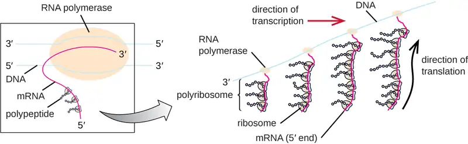
Transfer RNAs¶
Transfer RNAs (tRNAs) are structural RNA molecules and, depending on the species, many different types of tRNAs exist in the cytoplasm. Bacterial species typically have between 60 and 90 types. Serving as adaptors, each tRNA type binds to a specific codon on the mRNA template and adds the corresponding amino acid to the polypeptide chain. Therefore, tRNAs are the molecules that actually “translate” the language of RNA into the language of proteins. As the adaptor molecules of translation, it is surprising that tRNAs can fit so much specificity into such a small package. The tRNA molecule interacts with three factors: aminoacyl tRNA synthetases, ribosomes, and mRNA.
Mature tRNAs take on a three-dimensional structure when complementary bases exposed in the single-stranded RNA molecule hydrogen bond with each other (Figure 11.14). This shape positions the amino-acid binding site, called the CCA amino acid binding end, which is a cytosine-cytosine-adenine sequence at the 3’ end of the tRNA, and the anticodon at the other end. The anticodon is a three-nucleotide sequence that bonds with an mRNA codon through complementary base pairing.
An amino acid is added to the end of a tRNA molecule through the process of tRNA “charging,” during which each tRNA molecule is linked to its correct or cognate amino acid by a group of enzymes called aminoacyl tRNA synthetases. At least one type of aminoacyl tRNA synthetase exists for each of the 20 amino acids. During this process, the amino acid is first activated by the addition of adenosine monophosphate (AMP) and then transferred to the tRNA, making it a charged tRNA, and AMP is released.
![Three different drawings of tRNA. A) shows a single strand folded into a cross shape with intramolecular base pairing. The 3’ end at the top is labeled amino acid attachment site and has the sequence ACC. The 5’ end is also at the top. At the base of the cross is a three letter grouping called anticodon. This is complementary to a three letter set on the mRNA called a codon. B) shows a space filling 3-D model that is shaped like an L. One end is the amino acid attachment site and the other is the anticodon. C) is a ver simplified drawing shaped like zigzag; one end is the amino acid attachment site and the other is the anticodon.](img/osc-microbio-11-04-trna.webp)
Check Your Understanding
- Describe the structure and composition of the prokaryotic ribosome.
- In what direction is the mRNA template read?
- Describe the structure and function of a tRNA.
The Mechanism of Protein Synthesis¶
Translation is similar in prokaryotes and eukaryotes. Here we will explore how translation occurs in E. coli, a representative prokaryote, and specify any differences between bacterial and eukaryotic translation.
Initiation¶
The initiation of protein synthesis begins with the formation of an initiation complex. In E. coli, this complex involves the small 30S ribosome, the mRNA template, three initiation factors that help the ribosome assemble correctly, guanosine triphosphate (GTP) that acts as an energy source, and a special initiator tRNA carrying N-formyl-methionine (fMet-tRNAfMet) (Figure 11.15). The initiator tRNA interacts with the start codon AUG of the mRNA and carries a formylated methionine (fMet). Because of its involvement in initiation, fMet is inserted at the beginning (N terminus) of every polypeptide chain synthesized by E. coli. In E. coli mRNA, a leader sequence upstream of the first AUG codon, called the Shine-Dalgarno sequence (also known as the ribosomal binding site AGGAGG), interacts through complementary base pairing with the rRNA molecules that compose the ribosome. This interaction anchors the 30S ribosomal subunit at the correct location on the mRNA template. At this point, the 50S ribosomal subunit then binds to the initiation complex, forming an intact ribosome.
In eukaryotes, initiation complex formation is similar, with the following differences:
- The initiator tRNA is a different specialized tRNA carrying methionine, called Met-tRNAi
- Instead of binding to the mRNA at the Shine-Dalgarno sequence, the eukaryotic initiation complex recognizes the 5’ cap of the eukaryotic mRNA, then tracks along the mRNA in the 5’ to 3’ direction until the AUG start codon is recognized. At this point, the 60S subunit binds to the complex of Met-tRNAi, mRNA, and the 40S subunit.
![Diagram showing translation. At the start codon of the mRNA (AUG) the following attach: a tRNA with the anticodon UAC and containing the first amino acid, the large ribosomal subunit (a dome) and the small ribosomal subunit (a flat oval). During initiation, translational complex forms, and tRNA brings the first amino acid in polypeptide chain to bind to start codon om mRNA. At this point the tRNA is attached to the middle binding site (P) of the ribosome. The 3 sites from left to right are E, P, A. During elongation, tRNAs bring amino acids one by one to add to polypeptide chain. In the diagram, a tRNA with a long chain of circles is in the P site, a tRNA with a single circle is in the A site, and a tRNA without any circles is leaving from the E site. During termination, release factor recognizes stop codon, translational complex dissociates, and complete polypeptide is released. In the diagram a tRNA with a long strand is attached to the P site and a release factor (red shape) is attached to the stop codon in the mRNA which is now under the A site. Next the completed polypeptide leaves and all the other components dissociate from each other.](img/osc-microbio-11-04-tlninit.webp)
Elongation¶
In prokaryotes and eukaryotes, the basics of elongation of translation are the same. In E. coli, the binding of the 50S ribosomal subunit to produce the intact ribosome forms three functionally important ribosomal sites: The A (aminoacyl) site binds incoming charged aminoacyl tRNAs. The P (peptidyl) site binds charged tRNAs carrying amino acids that have formed peptide bonds with the growing polypeptide chain but have not yet dissociated from their corresponding tRNA. The E (exit) site releases dissociated tRNAs so that they can be recharged with free amino acids. There is one notable exception to this assembly line of tRNAs: During initiation complex formation, bacterial fMet−tRNAfMet or eukaryotic Met-tRNAi enters the P site directly without first entering the A site, providing a free A site ready to accept the tRNA corresponding to the first codon after the AUG.
Elongation proceeds with single-codon movements of the ribosome each called a translocation event. During each translocation event, the charged tRNAs enter at the A site, then shift to the P site, and then finally to the E site for removal. Ribosomal movements, or steps, are induced by conformational changes that advance the ribosome by three bases in the 3’ direction. Peptide bonds form between the amino group of the amino acid attached to the A-site tRNA and the carboxyl group of the amino acid attached to the P-site tRNA. The formation of each peptide bond is catalyzed by peptidyl transferase, an RNA-based ribozyme that is integrated into the 50S ribosomal subunit. The amino acid bound to the P-site tRNA is also linked to the growing polypeptide chain. As the ribosome steps across the mRNA, the former P-site tRNA enters the E site, detaches from the amino acid, and is expelled. Several of the steps during elongation, including binding of a charged aminoacyl tRNA to the A site and translocation, require energy derived from GTP hydrolysis, which is catalyzed by specific elongation factors. Amazingly, the E. coli translation apparatus takes only 0.05 seconds to add each amino acid, meaning that a 200 amino-acid protein can be translated in just 10 seconds.
Termination¶
The termination of translation occurs when a nonsense codon (UAA, UAG, or UGA) is encountered for which there is no complementary tRNA. On aligning with the A site, these nonsense codons are recognized by release factors in prokaryotes and eukaryotes that result in the P-site amino acid detaching from its tRNA, releasing the newly made polypeptide. The small and large ribosomal subunits dissociate from the mRNA and from each other; they are recruited almost immediately into another translation initiation complex.
In summary, there are several key features that distinguish prokaryotic gene expression from that seen in eukaryotes. These are illustrated in Figure 11.16 and listed in Figure 11.17.
![a) Diagram of prokaryotic cell with a plasma membrane on the outside. The DNA is in the cytoplasm and the mRNA is being copied at the same time that ribosomes are building proteins of the developing mRNA. B) Diagram of a eukaryotic cell with a plasma membrane an a nucleus. The DNA is in the nucleus and pre-mRNA is made during transcription; this is then process into mature mRNA. The mature mRNA then leaves the nucleus and enters the cytoplasm where translation takes place. This is when ribosomes bind to the mRNA and make proteins.](img/osc-microbio-11-04-prokeuk.webp)
![Table titled: Comparison of Translation in Bacteria Versus Eukaryotes. Bacteria have 70s ribosomes made of a 30s (small subunit) with 16SrRNA subunit and a 50S (large subunit) with 5S and 23S rRNA subunits. Eukaryotic ribosomes are 80S with 40s (small subunit) with 18s rRNA subunit and 60S (large subunit) with 5S, 5.8S, and 28S rRNA subunits. The amino acid carried by the initiator tRNA is fMet for bacteria and Met for Eukaryotes. Bacteria have a Shine-Delgarno sequence in their mRNA while Eukaryotes do not. Transcription and translation is simultaneous in bacteria but not in eukaryotes.](img/osc-microbio-11-04-comtrantbl.webp)
Protein Targeting, Folding, and Modification¶
During and after translation, polypeptides may need to be modified before they are biologically active. Post-translational modifications include:
- removal of translated signal sequences—short tails of amino acids that aid in directing a protein to a specific cellular compartment
- proper “folding” of the polypeptide and association of multiple polypeptide subunits, often facilitated by chaperone proteins, into a distinct three-dimensional structure
- proteolytic processing of an inactive polypeptide to release an active protein component, and
- various chemical modifications (e.g., phosphorylation, methylation, or glycosylation) of individual amino acids.
Check Your Understanding
- What are the components of the initiation complex for translation in prokaryotes?
- What are two differences between initiation of prokaryotic and eukaryotic translation?
- What occurs at each of the three active sites of the ribosome?
- What causes termination of translation?
11.5 Mutations¶
Learning Objectives
By the end of this section, you will be able to:
- Compare point mutations and frameshift mutations
- Describe the differences between missense, nonsense, and silent mutations
- Describe the differences between light and dark repair
- Explain how different mutagens act
- Explain why the Ames test can be used to detect carcinogens
- Analyze sequences of DNA and identify examples of types of mutations
A mutation is a heritable change in the DNA sequence of an organism. The resulting organism, called a mutant, may have a recognizable change in phenotype compared to the wild type, which is the phenotype most commonly observed in nature. A change in the DNA sequence is conferred to mRNA through transcription, and may lead to an altered amino acid sequence in a protein on translation. Because proteins carry out the vast majority of cellular functions, a change in amino acid sequence in a protein may lead to an altered phenotype for the cell and organism.
Effects of Mutations on DNA Sequence¶
There are several types of mutations that are classified according to how the DNA molecule is altered. One type, called a point mutation, affects a single base and most commonly occurs when one base is substituted or replaced by another. Mutations also result from the addition of one or more bases, known as an insertion, or the removal of one or more bases, known as a deletion.
Check Your Understanding
- What type of a mutation occurs when a gene has two fewer nucleotides in its sequence?
Effects of Mutations on Protein Structure and Function¶
Point mutations may have a wide range of effects on protein function (Figure 11.18). As a consequence of the degeneracy of the genetic code, a point mutation will commonly result in the same amino acid being incorporated into the resulting polypeptide despite the sequence change. This change would have no effect on the protein’s structure, and is thus called a silent mutation. A missense mutation results in a different amino acid being incorporated into the resulting polypeptide. The effect of a missense mutation depends on how chemically different the new amino acid is from the wild-type amino acid. The location of the changed amino acid within the protein also is important. For example, if the changed amino acid is part of the enzyme’s active site, then the effect of the missense mutation may be significant. Many missense mutations result in proteins that are still functional, at least to some degree. Sometimes the effects of missense mutations may be only apparent under certain environmental conditions; such missense mutations are called conditional mutations. Rarely, a missense mutation may be beneficial. Under the right environmental conditions, this type of mutation may give the organism that harbors it a selective advantage. Yet another type of point mutation, called a nonsense mutation, converts a codon encoding an amino acid (a sense codon) into a stop codon (a nonsense codon). Nonsense mutations result in the synthesis of proteins that are shorter than the wild type and typically not functional.
Deletions and insertions also cause various effects. Because codons are triplets of nucleotides, insertions or deletions in groups of three nucleotides may lead to the insertion or deletion of one or more amino acids and may not cause significant effects on the resulting protein’s functionality. However, frameshift mutations, caused by insertions or deletions of a number of nucleotides that are not a multiple of three are extremely problematic because a shift in the reading frame results (Figure 11.18). Because ribosomes read the mRNA in triplet codons, frameshift mutations can change every amino acid after the point of the mutation. The new reading frame may also include a stop codon before the end of the coding sequence. Consequently, proteins made from genes containing frameshift mutations are nearly always nonfunctional.
![Diagram of point mutations: substitution of a single base. A silent mutation has no effect on the protein sequence. The diagram shows a single letter change in the DNA which produces an RNA with a single letter that is different, however the protein is still the same. Missense results in an amino acid substitution. In this example the DNA has a single letter that has changed, which produces a single letter that is different on the mRNA, which produces a single amino acid that is different in the polypeptide chain. Nonsense mutations occur when a stop codon is substituted for an amino acid. The DNA has a single letter change, which changes one amino acid the mRNA, which produces a stop codon where there was an amino acid. Frameshift mutations are insertions or deletions of one or more bases which results in a reading frame shift. Two letters are deleted in the DNA strand which produces a shorter RNA strand which produces an entirely different protein.](img/osc-microbio-11-05-effmut.webp)
Check Your Understanding
- What are the reasons a nucleotide change in a gene for a protein might not have any effect on the phenotype of that gene?
- Is it possible for an insertion of three nucleotides together after the fifth nucleotide in a protein-coding gene to produce a protein that is shorter than normal? How or how not?
Micro Connections: A Beneficial Mutation
Since the first case of infection with human immunodeficiency virus (HIV) was reported in 1981, nearly 40 million people have died from HIV infection,2 the virus that causes acquired immune deficiency syndrome (AIDS). The virus targets helper T cells that play a key role in bridging the innate and adaptive immune response, infecting and killing cells normally involved in the body’s response to infection. There is no cure for HIV infection, but many drugs have been developed to slow or block the progression of the virus. Although individuals around the world may be infected, the highest prevalence among people 15–49 years old is in sub-Saharan Africa, where nearly one person in 20 is infected, accounting for greater than 70% of the infections worldwide3 (Figure 11.19). Unfortunately, this is also a part of the world where prevention strategies and drugs to treat the infection are the most lacking.
In recent years, scientific interest has been piqued by the discovery of a few individuals from northern Europe who are resistant to HIV infection. In 1998, American geneticist Stephen J. O’Brien at the National Institutes of Health (NIH) and colleagues published the results of their genetic analysis of more than 4,000 individuals. These indicated that many individuals of Eurasian descent (up to 14% in some ethnic groups) have a deletion mutation, called CCR5-delta 32, in the gene encoding CCR5. CCR5 is a coreceptor found on the surface of T cells that is necessary for many strains of the virus to enter the host cell. The mutation leads to the production of a receptor to which HIV cannot effectively bind and thus blocks viral entry. People homozygous for this mutation have greatly reduced susceptibility to HIV infection, and those who are heterozygous have some protection from infection as well.
It is not clear why people of northern European descent, specifically, carry this mutation, but its prevalence seems to be highest in northern Europe and steadily decreases in populations as one moves south. Research indicates that the mutation has been present since before HIV appeared and may have been selected for in European populations as a result of exposure to the plague or smallpox. This mutation may protect individuals from plague (caused by the bacterium Yersinia pestis) and smallpox (caused by the variola virus) because this receptor may also be involved in these diseases. The age of this mutation is a matter of debate, but estimates suggest it appeared between 1875 years to 225 years ago, and may have been spread from Northern Europe through Viking invasions.
This exciting finding has led to new avenues in HIV research, including looking for drugs to block CCR5 binding to HIV in individuals who lack the mutation. Although DNA testing to determine which individuals carry the CCR5-delta 32 mutation is possible, there are documented cases of individuals homozygous for the mutation contracting HIV. For this reason, DNA testing for the mutation is not widely recommended by public health officials so as not to encourage risky behavior in those who carry the mutation. Nevertheless, inhibiting the binding of HIV to CCR5 continues to be a valid strategy for the development of drug therapies for those infected with HIV.
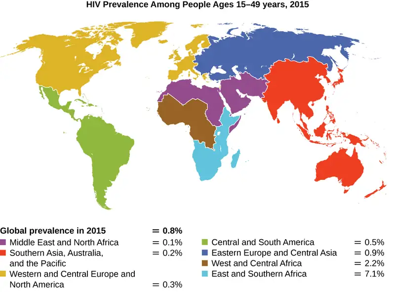
Causes of Mutations¶
Mistakes in the process of DNA replication can cause spontaneous mutations to occur. The error rate of DNA polymerase is one incorrect base per billion base pairs replicated. Exposure to mutagens can cause induced mutations, which are various types of chemical agents or radiation (Table 11.4). Exposure to a mutagen can increase the rate of mutation more than 1000-fold. Mutagens are often also carcinogens, agents that cause cancer. However, whereas nearly all carcinogens are mutagenic, not all mutagens are necessarily carcinogens.
Chemical Mutagens¶
Various types of chemical mutagens interact directly with DNA either by acting as nucleoside analogs or by modifying nucleotide bases. Chemicals called nucleoside analogs are structurally similar to normal nucleotide bases and can be incorporated into DNA during replication (Figure 11.20). These base analogs induce mutations because they often have different base-pairing rules than the bases they replace. Other chemical mutagens can modify normal DNA bases, resulting in different base-pairing rules. For example, nitrous acid deaminates cytosine, converting it to uracil. Uracil then pairs with adenine in a subsequent round of replication, resulting in the conversion of a GC base pair to an AT base pair. Nitrous acid also deaminates adenine to hypoxanthine, which base pairs with cytosine instead of thymine, resulting in the conversion of a TA base pair to a CG base pair.
Chemical mutagens known as intercalating agents work differently. These molecules slide between the stacked nitrogenous bases of the DNA double helix, distorting the molecule and creating atypical spacing between nucleotide base pairs (Figure 11.21). As a result, during DNA replication, DNA polymerase may either skip replicating several nucleotides (creating a deletion) or insert extra nucleotides (creating an insertion). Either outcome may lead to a frameshift mutation. Combustion products like polycyclic aromatic hydrocarbons are particularly dangerous intercalating agents that can lead to mutation-caused cancers. The intercalating agents ethidium bromide and acridine orange are commonly used in the laboratory to stain DNA for visualization and are potential mutagens.
![Diagram showing analogs of normal nitrogenous bases. Adenine nucleoside has a double ring of carbon and nitrogen with an NH2 group attached at one of the carbons. The analog 2-aminopurine nucleoside has an H attached to this carbon. Thymine nucleoside has a single carbon nitrogen ring with a CH3 attached to the carbon at the bottom of the ring. The analog 5-bromouracil nucleoside has a Br attached to this carbon. Cytosine has a single carbon and nitrogen ring with an NH2 at one of the carbons. Nitrous acid (NHO2) replaces the NH2 with a double bonded O. This converts the cytosine to a uracil with now binds with adenine instead of guanine.](img/osc-microbio-11-05-nucanmod.webp)
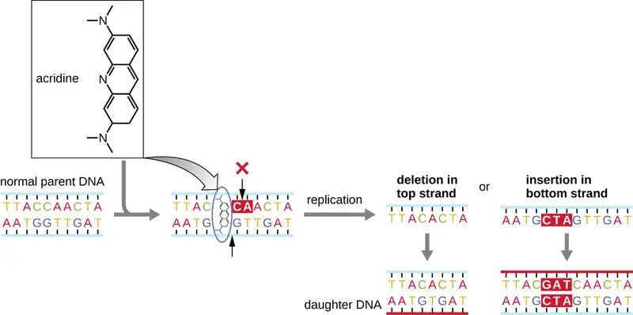
Radiation¶
Exposure to either ionizing or nonionizing radiation can each induce mutations in DNA, although by different mechanisms. Strong ionizing radiation like X-rays and gamma rays can cause single- and double-stranded breaks in the DNA backbone through the formation of hydroxyl radicals on radiation exposure (Figure 11.22). Ionizing radiation can also modify bases; for example, the deamination of cytosine to uracil, analogous to the action of nitrous acid.4 Ionizing radiation exposure is used to kill microbes to sterilize medical devices and foods, because of its dramatic nonspecific effect in damaging DNA, proteins, and other cellular components (see Using Physical Methods to Control Microorganisms).
Nonionizing radiation, like ultraviolet light, is not energetic enough to initiate these types of chemical changes. However, nonionizing radiation can induce dimer formation between two adjacent pyrimidine bases, commonly two thymines, within a nucleotide strand. During thymine dimer formation, the two adjacent thymines become covalently linked and, if left unrepaired, both DNA replication and transcription are stalled at this point. DNA polymerase may proceed and replicate the dimer incorrectly, potentially leading to frameshift or point mutations.
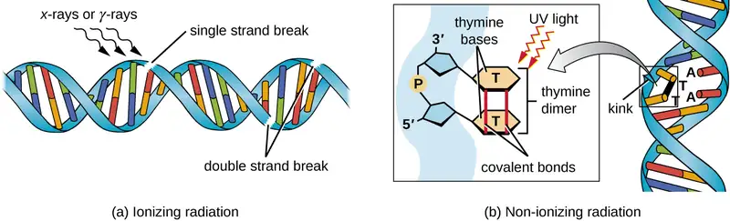
Table 11.4
| A Summary of Mutagenic Agents | |||
|---|---|---|---|
| Mutagenic Agents | Mode of Action | Effect on DNA | Resulting Type of Mutation |
| Nucleoside analogs | |||
| 2-aminopurine | Is inserted in place of A but base pairs with C | Converts AT to GC base pair | Point |
| 5-bromouracil | Is inserted in place of T but base pairs with G | Converts AT to GC base pair | Point |
| Nucleotide-modifying agent | |||
| Nitrous oxide | Deaminates C to U | Converts GC to AT base pair | Point |
| Intercalating agents | |||
| Acridine orange, ethidium bromide, polycyclic aromatic hydrocarbons | Distorts double helix, creates unusual spacing between nucleotides | Introduces small deletions and insertions | Frameshift |
| Ionizing radiation | |||
| X-rays, γ-rays | Forms hydroxyl radicals | Causes single- and double-strand DNA breaks | Repair mechanisms may introduce mutations |
| X-rays, γ-rays | Modifies bases (e.g., deaminating C to U) | Converts GC to AT base pair | Point |
| Nonionizing radiation | |||
| Ultraviolet | Forms pyrimidine (usually thymine) dimers | Causes DNA replication errors | Frameshift or point |
Check Your Understanding
- How does a base analog introduce a mutation?
- How does an intercalating agent introduce a mutation?
- What type of mutagen causes thymine dimers?
DNA Repair¶
The process of DNA replication is highly accurate, but mistakes can occur spontaneously or be induced by mutagens. Uncorrected mistakes can lead to serious consequences for the phenotype. Cells have developed several repair mechanisms to minimize the number of mutations that persist.
Proofreading¶
Most of the mistakes introduced during DNA replication are promptly corrected by most DNA polymerases through a function called proofreading. In proofreading, the DNA polymerase reads the newly added base, ensuring that it is complementary to the corresponding base in the template strand before adding the next one. If an incorrect base has been added, the enzyme makes a cut to release the wrong nucleotide and a new base is added.
Mismatch Repair¶
Some errors introduced during replication are corrected shortly after the replication machinery has moved. This mechanism is called mismatch repair. The enzymes involved in this mechanism recognize the incorrectly added nucleotide, excise it, and replace it with the correct base. One example is the methyl-directed mismatch repair in E. coli. The DNA is hemimethylated. This means that the parental strand is methylated while the newly synthesized daughter strand is not. It takes several minutes before the new strand is methylated. Proteins MutS, MutL, and MutH bind to the hemimethylated site where the incorrect nucleotide is found. MutH cuts the nonmethylated strand (the new strand). An exonuclease removes a portion of the strand (including the incorrect nucleotide). The gap formed is then filled in by DNA pol III and ligase.
Repair of Thymine Dimers¶
Because the production of thymine dimers is common (many organisms cannot avoid ultraviolet light), mechanisms have evolved to repair these lesions. In nucleotide excision repair (also called dark repair), enzymes remove the pyrimidine dimer and replace it with the correct nucleotides (Figure 11.23). In E. coli, the DNA is scanned by an enzyme complex. If a distortion in the double helix is found that was introduced by the pyrimidine dimer, the enzyme complex cuts the sugar-phosphate backbone several bases upstream and downstream of the dimer, and the segment of DNA between these two cuts is then enzymatically removed. DNA pol I replaces the missing nucleotides with the correct ones and DNA ligase seals the gap in the sugar-phosphate backbone.
The direct repair (also called light repair) of thymine dimers occurs through the process of photoreactivation in the presence of visible light. An enzyme called photolyase recognizes the distortion in the DNA helix caused by the thymine dimer and binds to the dimer. Then, in the presence of visible light, the photolyase enzyme changes conformation and breaks apart the thymine dimer, allowing the thymines to again correctly base pair with the adenines on the complementary strand. Photoreactivation appears to be present in all organisms, with the exception of placental mammals, including humans. Photoreactivation is particularly important for organisms chronically exposed to ultraviolet radiation, like plants, photosynthetic bacteria, algae, and corals, to prevent the accumulation of mutations caused by thymine dimer formation.
![a) Diagram of nucleotide excision repair. A thymine dimer is when 2 Ts are bound to each other rather than to the As across from them. This damage is recognized and a large section of DNA on either side of the dimer is removed. Nuclease is used to cut the strands and helicase removes the damaged section. DNA pol I and DNA ligase make the repairs. B) in photoreactivation, an enzyme called photolyase sits binds to the thymine dimer and breaks the bonds between the Ts. The Ts can then bind to the As across from them.](img/osc-microbio-11-05-thydirep.webp)
Check Your Understanding
- During mismatch repair, how does the enzyme recognize which is the new and which is the old strand?
- What type of mutation does photolyase repair?
Identifying Bacterial Mutants¶
One common technique used to identify bacterial mutants is called replica plating. This technique is used to detect nutritional mutants, called auxotrophs, which have a mutation in a gene encoding an enzyme in the biosynthesis pathway of a specific nutrient, such as an amino acid. As a result, whereas wild-type cells retain the ability to grow normally on a medium lacking the specific nutrient, auxotrophs are unable to grow on such a medium. During replica plating (Figure 11.24), a population of bacterial cells is mutagenized and then plated as individual cells on a complex nutritionally complete plate and allowed to grow into colonies. Cells from these colonies are removed from this master plate, often using sterile velvet. This velvet, containing cells, is then pressed in the same orientation onto plates of various media. At least one plate should also be nutritionally complete to ensure that cells are being properly transferred between the plates. The other plates lack specific nutrients, allowing the researcher to discover various auxotrophic mutants unable to produce specific nutrients. Cells from the corresponding colony on the nutritionally complete plate can be used to recover the mutant for further study.
Check Your Understanding
- Why are cells plated on a nutritionally complete plate in addition to nutrient-deficient plates when looking for a mutant?
The Ames Test¶
The Ames test, developed by Bruce Ames (1928–) in the 1970s, is a method that uses bacteria for rapid, inexpensive screening of the carcinogenic potential of new chemical compounds. The test measures the mutation rate associated with exposure to the compound, which, if elevated, may indicate that exposure to this compound is associated with greater cancer risk. The Ames test uses as the test organism a strain of Salmonella typhimurium that is a histidine auxotroph, unable to synthesize its own histidine because of a mutation in an essential gene required for its synthesis. After exposure to a potential mutagen, these bacteria are plated onto a medium lacking histidine, and the number of mutants regaining the ability to synthesize histidine is recorded and compared with the number of such mutants that arise in the absence of the potential mutagen (Figure 11.25). Chemicals that are more mutagenic will bring about more mutants with restored histidine synthesis in the Ames test. Because many chemicals are not directly mutagenic but are metabolized to mutagenic forms by liver enzymes, rat liver extract is commonly included at the start of this experiment to mimic liver metabolism. After the Ames test is conducted, compounds identified as mutagenic are further tested for their potential carcinogenic properties by using other models, including animal models like mice and rats.
![Diagram of the process of identifying auxotrophic mutants. First a medium containing histidine grows colonies of bacteria. Then, a sterile velvet surface is pressed onto the plate to pick up cells from bacterial colonies. Next the cells on the velvet are transferred to new plates, one with histidine and one without. A mark on the plate ensures that the orientation of the colonies is the same for all plates. After the plates are incubated, compare the growth on the plates to identify auxotrophic mutants that grow on medium containing histidine but do not grow on medium lacking histidine. A colony that is missing on the medium lacking histamine but present on the medium with histamine is the auxotrophic mutant.](img/osc-microbio-11-05-posnegsel.webp)
![Diagram of the Ames test. 1 – Add rat liver extract and Salmonella to control tube. Add rat liver extract, possible mutagen, and Salmonella to experimental tube. The Salmonella strain in this test requires histidine. 2 – Plant and incubate both samples using medium lacking histidine. 3 – Compare growth on plates to identify revertants, which suggest mutagen causes mutations. In the image the plate without the possible mutagen has a few colonies (control with natural revertants). The plate from the sample with the possible mutagen has many colonies (high number of revertants his- to his+).](img/osc-microbio-11-05-ames.webp)
Check Your Understanding
- What mutation is used as an indicator of mutation rate in the Ames test?
- Why can the Ames test work as a test for carcinogenicity?
11.6 How Asexual Prokaryotes Achieve Genetic Diversity¶
Learning Objectives
By the end of this section, you will be able to:
- Compare the processes of transformation, transduction, and conjugation
- Explain how asexual gene transfer results in prokaryotic genetic diversity
- Explain the structure and consequences for bacterial genetic diversity of transposons
Typically, when we consider genetic transfer, we think of vertical gene transfer, the transmission of genetic information from generation to generation. Vertical gene transfer is by far the main mode of transmission of genetic information in all cells. In sexually reproducing organisms, crossing-over events and independent assortment of individual chromosomes during meiosis contribute to genetic diversity in the population. Genetic diversity is also introduced during sexual reproduction, when the genetic information from two parents, each with different complements of genetic information, are combined, producing new combinations of parental genotypes in the diploid offspring. The occurrence of mutations also contributes to genetic diversity in a population. Genetic diversity of offspring is useful in changing or inconsistent environments and may be one reason for the evolutionary success of sexual reproduction.
When prokaryotes and eukaryotes reproduce asexually, they transfer a nearly identical copy of their genetic material to their offspring through vertical gene transfer. Although asexual reproduction produces more offspring more quickly, any benefits of diversity among those offspring are lost. How then do organisms whose dominant reproductive mode is asexual create genetic diversity? In prokaryotes, horizontal gene transfer (HGT), the introduction of genetic material from one organism to another organism within the same generation, is an important way to introduce genetic diversity. HGT allows even distantly related species to share genes, influencing their phenotypes. It is thought that HGT is more prevalent in prokaryotes but that only a small fraction of the prokaryotic genome may be transferred by this type of transfer at any one time. As the phenomenon is investigated more thoroughly, it may be revealed to be even more common. Many scientists believe that HGT and mutation are significant sources of genetic variation, the raw material for the process of natural selection, in prokaryotes. Although HGT is more common among evolutionarily related organisms, it may occur between any two species that live together in a natural community.
HGT in prokaryotes is known to occur by the three primary mechanisms that are illustrated in Figure 11.26:
- Transformation: naked DNA is taken up from the environment
- Transduction: genes are transferred between cells in a virus (see The Viral Life Cycle)
- Conjugation: use of a hollow tube called a conjugation pilus to transfer genes between cells
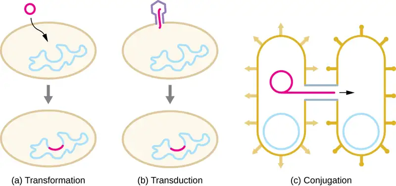
Check Your Understanding
- What are three ways sexual reproduction introduces genetic variation into offspring?
- What is a benefit of asexual reproduction?
- What are the three mechanisms of horizontal gene transfer in prokaryotes?
Transformation¶
Frederick Griffith was the first to demonstrate the process of transformation. In 1928, he showed that live, nonpathogenic Streptococcus pneumoniae bacteria could be transformed into pathogenic bacteria through exposure to a heat-killed pathogenic strain. He concluded that some sort of agent, which he called the “transforming principle,” had been passed from the dead pathogenic bacteria to the live, nonpathogenic bacteria. In 1944, Oswald Avery (1877–1955), Colin MacLeod (1909–1972), and Maclyn McCarty (1911–2005) demonstrated that the transforming principle was DNA (see Using Microorganisms to Discover the Secrets of Life).
In transformation, the prokaryote takes up naked DNA found in its environment and that is derived from other cells that have lysed on death and released their contents, including their genome, into the environment. Many bacteria are naturally competent, meaning that they actively bind to environmental DNA, transport it across their cell envelopes into their cytoplasm, and make it single stranded. Typically, double-stranded foreign DNA within cells is destroyed by nucleases as a defense against viral infection. However, these nucleases are usually ineffective against single-stranded DNA, so this single-stranded DNA within the cell has the opportunity to recombine into the bacterial genome. A molecule of DNA that contains fragments of DNA from different organisms is called recombinant DNA. (Recombinant DNA will be discussed in more detail in Microbes and the Tools of Genetic Engineering.) If the bacterium incorporates the new DNA into its own genome through recombination, the bacterial cell may gain new phenotypic properties. For example, if a nonpathogenic bacterium takes up DNA for a toxin gene from a pathogen and then incorporates it into its chromosome, it, too, may become pathogenic. Plasmid DNA may also be taken up by competent bacteria and confer new properties to the cell. Overall, transformation in nature is a relatively inefficient process because environmental DNA levels are low because of the activity of nucleases that are also released during cellular lysis. Additionally, genetic recombination is inefficient at incorporating new DNA sequences into the genome.
In nature, bacterial transformation is an important mechanism for the acquisition of genetic elements encoding virulence factors and antibiotic resistance. Genes encoding resistance to antimicrobial compounds have been shown to be widespread in nature, even in environments not influenced by humans. These genes, which allow microbes living in mixed communities to compete for limited resources, can be transferred within a population by transformation, as well as by the other processes of HGT. In the laboratory, we can exploit the natural process of bacterial transformation for genetic engineering to make a wide variety of medicinal products, as discussed in Microbes and the Tools of Genetic Engineering.
Check Your Understanding
- Why does a bacterial cell make environmental DNA brought into the cell into a single-stranded form?
Transduction¶
Viruses that infect bacteria (bacteriophages) may also move short pieces of chromosomal DNA from one bacterium to another in a process called transduction (see Figure 6.9). Recall that in generalized transduction, any piece of chromosomal DNA may be transferred to a new host cell by accidental packaging of chromosomal DNA into a phage head during phage assembly. By contrast, specialized transduction results from the imprecise excision of a lysogenic prophage from the bacterial chromosome such that it carries with it a piece of the bacterial chromosome from either side of the phage’s integration site to a new host cell. As a result, the host may acquire new properties. This process is called lysogenic conversion. Of medical significance, a lysogenic phage may carry with it a virulence gene to its new host. Once inserted into the new host’s chromosome, the new host may gain pathogenicity. Several pathogenic bacteria, including Corynebacterium diphtheriae (the causative agent of diphtheria) and Clostridium botulinum (the causative agent of botulism), are virulent because of the introduction of toxin-encoding genes by lysogenic bacteriophages, affirming the clinical relevance of transduction in the exchange of genes involved in infectious disease. Archaea have their own viruses that translocate genetic material from one individual to another.
Check Your Understanding
- What is the agent of transduction of prokaryotic cells?
- In specialized transduction, where does the transducing piece of DNA come from?
Case in Point: The Clinical Consequences of Transduction
Paul, a 23-year-old relief worker from Atlanta, traveled to Haiti in 2011 to provide aid following the 2010 earthquake. After working there for several weeks, he suddenly began experiencing abdominal distress, including severe cramping, nausea, vomiting, and watery diarrhea. He also began to experience intense muscle cramping. At a local clinic, the physician suspected that Paul’s symptoms were caused by cholera because there had been a cholera outbreak after the earthquake. Because cholera is transmitted by the fecal-oral route, breaches in sanitation infrastructure, such as often occur following natural disasters, may precipitate outbreaks. The physician confirmed the presumptive diagnosis using a cholera dipstick test. He then prescribed Paul a single dose of doxycycline, as well as oral rehydration salts, instructing him to drink significant amounts of clean water.
Cholera is caused by the gram-negative curved rod Vibrio cholerae (Figure 11.27). Its symptoms largely result from the production of the cholera toxin (CT), which ultimately activates a chloride transporter to pump chloride ions out of the epithelial cells into the gut lumen. Water then follows the chloride ions, causing the prolific watery diarrhea characteristic of cholera. The gene encoding the cholera toxin is incorporated into the bacterial chromosome of V. cholerae through infection of the bacterium with the lysogenic filamentous CTX phage, which carries the CT gene and introduces it into the chromosome on integration of the prophage. Thus, pathogenic strains of V. cholerae result from horizontal gene transfer by specialized transduction.
- Why are outbreaks of cholera more common as a result of a natural disaster?
- Why is muscle cramping a common symptom of cholera? Why is treatment with oral rehydration salts so important for the treatment of cholera?
- In areas stricken by cholera, what are some strategies that people could use to prevent disease transmission?
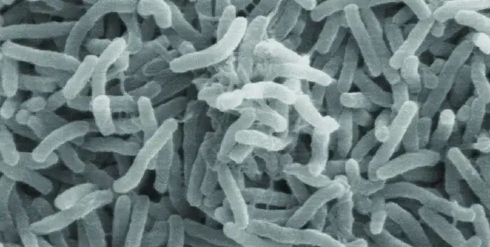
Conjugation¶
In conjugation, DNA is directly transferred from one prokaryote to another by means of a conjugation pilus, which brings the organisms into contact with one another. In E. coli, the genes encoding the ability to conjugate are located on a bacterial plasmid called the F plasmid, also known as the fertility factor, and the conjugation pilus is called the F pilus. The F-plasmid genes encode both the proteins composing the F pilus and those involved in rolling circle replication of the plasmid. Cells containing the F plasmid, capable of forming an F pilus, are called F+ cells or donor cells, and those lacking an F plasmid are called F− cells or recipient cells.
Conjugation of the F Plasmid¶
During typical conjugation in E. coli, the F pilus of an F+ cell comes into contact with an F– cell and retracts, bringing the two cell envelopes into contact (Figure 11.28). Then a cytoplasmic bridge forms between the two cells at the site of the conjugation pilus. As rolling circle replication of the F plasmid occurs in the F+ cell, a single-stranded copy of the F plasmid is transferred through the cytoplasmic bridge to the F− cell, which then synthesizes the complementary strand, making it double stranded. The F− cell now becomes an F+ cell capable of making its own conjugation pilus. Eventually, in a mixed bacterial population containing both F+ and F− cells, all cells will become F+ cells. Genes on the E. coli F plasmid also encode proteins preventing conjugation between F+ cells.
![Diagram of conjugation. 1: Pilus of donor cell attaches to recipient cell. The donor cell contains a plasmid labeled F plasmid; the cell is labeled F+ donor cell. The recipient cell is labeled F- recipient cell and does not contain a plasmid. A bridge between them is labeled pilus. 2: Pilus contracts, drawing cells together to make contact with one another. 3: One strand of F plasmid DNA transfers from donor cell to recipient cell. 4: Donor synthesizes complementary strand to restore plasmid. Recipient synthesizes complementary strand to become F+ cell pith pilus. Both cells are now labeled F+ and contain a small circular plasmid.](img/osc-microbio-11-06-conjug.webp)
Conjugation of F’ and Hfr Cells¶
Although typical conjugation in E. coli results in the transfer of the F-plasmid DNA only, conjugation may also transfer chromosomal DNA. This is because the F plasmid occasionally integrates into the bacterial chromosome through recombination between the plasmid and the chromosome, forming an Hfr cell (Figure 11.29). “Hfr” refers to the high frequency of recombination seen when recipient F− cells receive genetic information from Hfr cells through conjugation. Similar to the imprecise excision of a prophage during specialized transduction, the integrated F plasmid may also be imprecisely excised from the chromosome, producing an F’ plasmid that carries with it some chromosomal DNA adjacent to the integration site. On conjugation, this DNA is introduced to the recipient cell and may be either maintained as part of the F’ plasmid or be recombined into the recipient cell’s bacterial chromosome.
Hfr cells may also treat the bacterial chromosome like an enormous F plasmid and attempt to transfer a copy of it to a recipient F− cell. Because the bacterial chromosome is so large, transfer of the entire chromosome takes a long time (Figure 11.30). However, contact between bacterial cells during conjugation is transient, so it is unusual for the entire chromosome to be transferred. Host chromosomal DNA near the integration site of the F plasmid, displaced by the unidirectional process of rolling circle replication, is more likely to be transferred and recombined into a recipient cell’s chromosome than host genes farther away. Thus, the relative location of bacterial genes on the Hfr cell’s genome can be mapped based on when they are transferred through conjugation. As a result, prior to the age of widespread bacterial genome sequencing, distances on prokaryotic genome maps were often measured in minutes.
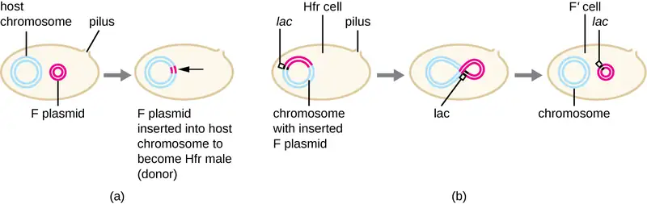
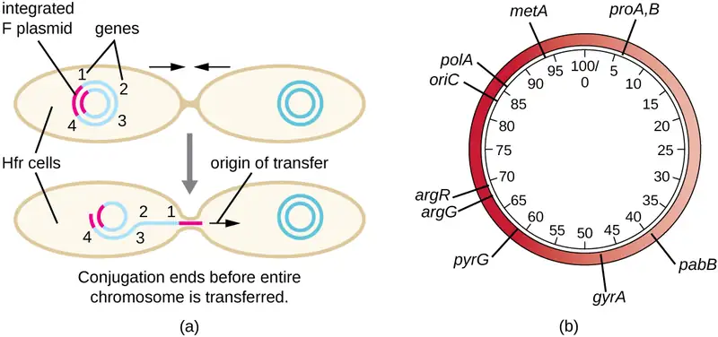
Consequences and Applications of Conjugation¶
Plasmids are an important type of extrachromosomal DNA element in bacteria and, in those cells that harbor them, are considered to be part of the bacterial genome. From a clinical perspective, plasmids often code for genes involved in virulence. For example, genes encoding proteins that make a bacterial cell resistant to a particular antibiotic are encoded on R plasmids. R plasmids, in addition to their genes for antimicrobial resistance, contain genes that control conjugation and transfer of the plasmid. R plasmids are able to transfer between cells of the same species and between cells of different species. Single R plasmids commonly contain multiple genes conferring resistance to multiple antibiotics.
Genes required for the production of various toxins and molecules important for colonization during infection may also be found encoded on plasmids. For example, verotoxin-producing strains of E. coli (VTEC) appear to have acquired the genes encoding the Shiga toxin from its gram-negative relative Shigella dysenteriae through the acquisition of a large plasmid encoding this toxin. VTEC causes severe diarrheal disease that may result in hemolytic uremic syndrome (HUS), which may be lead to kidney failure and death.
In nonclinical settings, bacterial genes that encode metabolic enzymes needed to degrade specialized atypical compounds like polycyclic aromatic hydrocarbons (PAHs) are also frequently encoded on plasmids. Additionally, certain plasmids have the ability to move from bacterial cells to other cell types, like those of plants and animals, through mechanisms distinct from conjugation. Such mechanisms and their use in genetic engineering are covered in Modern Applications of Microbial Genetics.
Link to Learning
Watch this animation to learn more about the process of conjugation.
Check Your Understanding
- What type of replication occurs during conjugation?
- What occurs to produce an Hfr E. coli cell?
- What types of traits are encoded on plasmids?
Transposition¶
Genetic elements called transposons (transposable elements), or “jumping genes,” are molecules of DNA that include special inverted repeat sequences at their ends and a gene encoding the enzyme transposase (Figure 11.31). Transposons allow the entire sequence to independently excise from one location in a DNA molecule and integrate into the DNA elsewhere through a process called transposition. Transposons were originally discovered in maize (corn) by American geneticist Barbara McClintock (1902–1992) in the 1940s. Transposons have since been found in all types of organisms, both prokaryotes and eukaryotes. Thus, unlike the three previous mechanisms discussed, transposition is not prokaryote-specific. Most transposons are nonreplicative, meaning they move in a “cut-and-paste” fashion. Some may be replicative, however, retaining their location in the DNA while making a copy to be inserted elsewhere (“copy and paste”). Because transposons can move within a DNA molecule, from one DNA molecule to another, or even from one cell to another, they have the ability to introduce genetic diversity. Movement within the same DNA molecule can alter phenotype by inactivating or activating a gene.
Transposons may carry with them additional genes, moving these genes from one location to another with them. For example, bacterial transposons can relocate antibiotic resistance genes, moving them from chromosomes to plasmids. This mechanism has been shown to be responsible for the colocalization of multiple antibiotic resistance genes on a single R plasmid in Shigella strains causing bacterial dysentery. Such an R plasmid can then be easily transferred among a bacterial population through the process of conjugation.
![Diagram of a transposon. 1: A typical transposon encodes the enzyme transposase, surrounded by inverted repeat sequences. A segment of chromosome shows that the transposon is interspersed between genes. The transposon is made of a gene for transposase and small bands labeled inverted repeat sequence on either side of the gene. 2: Transposase facilitates recombination between inverted repeats. Transposon is cut from its original location and inserted into a new location. This is shown by an oval labeled transposase causing the DNA segment for fold upon itself so the inverted repeats are nearly touching. 3: Transposon targets specific sequences in DNA that will be duplicated, forming direct repeats on either side of the inserted transposon sequence. This is shows as the transposon now sitting in the middle of a gene labeled disrupted gene.](img/osc-microbio-11-06-transpos.webp)
Check Your Understanding
- What are two ways a transposon can affect the phenotype of a cell it moves to?
Table 11.5 summarizes the processes discussed in this section.
Table 11.5
| Summary of Mechanisms of Genetic Diversity in Prokaryotes | |
|---|---|
| Term | Definition |
| Conjugation | Transfer of DNA through direct contact using a conjugation pilus |
| Transduction | Mechanism of horizontal gene transfer in bacteria in which genes are transferred through viral infection |
| Transformation | Mechanism of horizontal gene transfer in which naked environmental DNA is taken up by a bacterial cell |
| Transposition | Process whereby DNA independently excises from one location in a DNA molecule and integrates elsewhere |
Clinical Focus: Part 3
Despite continued antibiotic treatment, Mark’s infection continued to progress rapidly. The infected region continued to expand, and he had to be put on a ventilator to help him breathe. Mark’s physician ordered surgical removal of the infected tissue. Following an initial surgery, Mark’s wound was monitored daily to ensure that the infection did not return, but it continued to spread.
After two additional rounds of surgery, the infection finally seemed to be contained. A few days later, Mark was removed from the ventilator and was able to breathe on his own. However, he had lost a great deal of skin and soft tissue on his lower leg.
- Why does the removal of infected tissue stem the infection?
- What are some likely complications of this method of treatment?
Jump to the next Clinical Focus box. Go back to the previous Clinical Focus box.
11.7 Gene Regulation: Operon Theory¶
Learning Objectives
By the end of this section, you will be able to:
- Compare inducible operons and repressible operons
- Describe why regulation of operons is important
Each nucleated cell in a multicellular organism contains copies of the same DNA. Similarly, all cells in two pure bacterial cultures inoculated from the same starting colony contain the same DNA, with the exception of changes that arise from spontaneous mutations. If each cell in a multicellular organism has the same DNA, then how is it that cells in different parts of the organism’s body exhibit different characteristics? Similarly, how is it that the same bacterial cells within two pure cultures exposed to different environmental conditions can exhibit different phenotypes? In both cases, each genetically identical cell does not turn on, or express, the same set of genes. Only a subset of proteins in a cell at a given time is expressed.
Genomic DNA contains both structural genes, which encode products that serve as cellular structures or enzymes, and regulatory genes, which encode products that regulate gene expression. The expression of a gene is a highly regulated process. Whereas regulating gene expression in multicellular organisms allows for cellular differentiation, in single-celled organisms like prokaryotes, it primarily ensures that a cell’s resources are not wasted making proteins that the cell does not need at that time.
Elucidating the mechanisms controlling gene expression is important to the understanding of human health. Malfunctions in this process in humans lead to the development of cancer and other diseases. Understanding the interaction between the gene expression of a pathogen and that of its human host is important for the understanding of a particular infectious disease. Gene regulation involves a complex web of interactions within a given cell among signals from the cell’s environment, signaling molecules within the cell, and the cell’s DNA. These interactions lead to the expression of some genes and the suppression of others, depending on circumstances.
Prokaryotes and eukaryotes share some similarities in their mechanisms to regulate gene expression; however, gene expression in eukaryotes is more complicated because of the temporal and spatial separation between the processes of transcription and translation. Thus, although most regulation of gene expression occurs through transcriptional control in prokaryotes, regulation of gene expression in eukaryotes occurs at the transcriptional level and post-transcriptionally (after the primary transcript has been made).
Prokaryotic Gene Regulation¶
In bacteria and archaea, structural proteins with related functions are usually encoded together within the genome in a block called an operon and are transcribed together under the control of a single promoter, resulting in the formation of a polycistronic transcript (Figure 11.32). In this way, regulation of the transcription of all of the structural genes encoding the enzymes that catalyze the many steps in a single biochemical pathway can be controlled simultaneously, because they will either all be needed at the same time, or none will be needed. For example, in E. coli, all of the structural genes that encode enzymes needed to use lactose as an energy source lie next to each other in the lactose (or lac) operon under the control of a single promoter, the lac promoter. French scientists François Jacob (1920–2013) and Jacques Monod at the Pasteur Institute were the first to show the organization of bacterial genes into operons, through their studies on the lac operon of E. coli. For this work, they won the Nobel Prize in Physiology or Medicine in 1965. Although eukaryotic genes are not organized into operons, prokaryotic operons are excellent models for learning about gene regulation generally. There are some gene clusters in eukaryotes that function similar to operons. Many of the principles can be applied to eukaryotic systems and contribute to our understanding of changes in gene expression in eukaryotes that can result pathological changes such as cancer.
Each operon includes DNA sequences that influence its own transcription; these are located in a region called the regulatory region. The regulatory region includes the promoter and the region surrounding the promoter, to which transcription factors, proteins encoded by regulatory genes, can bind. Transcription factors influence the binding of RNA polymerase to the promoter and allow its progression to transcribe structural genes. A repressor is a transcription factor that suppresses transcription of a gene in response to an external stimulus by binding to a DNA sequence within the regulatory region called the operator, which is located between the RNA polymerase binding site of the promoter and the transcriptional start site of the first structural gene. Repressor binding physically blocks RNA polymerase from transcribing structural genes. Conversely, an activator is a transcription factor that increases the transcription of a gene in response to an external stimulus by facilitating RNA polymerase binding to the promoter. An inducer, a third type of regulatory molecule, is a small molecule that either activates or represses transcription by interacting with a repressor or an activator.
In prokaryotes, there are examples of operons whose gene products are required rather consistently and whose expression, therefore, is unregulated. Such operons are constitutively expressed, meaning they are transcribed and translated continuously to provide the cell with constant intermediate levels of the protein products. Such genes encode enzymes involved in housekeeping functions required for cellular maintenance, including DNA replication, repair, and expression, as well as enzymes involved in core metabolism. In contrast, there are other prokaryotic operons that are expressed only when needed and are regulated by repressors, activators, and inducers.
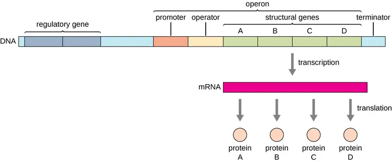
Check Your Understanding
- What are the parts in the DNA sequence of an operon?
- What types of regulatory molecules are there?
Regulation by Repression¶
Prokaryotic operons are commonly controlled by the binding of repressors to operator regions, thereby preventing the transcription of the structural genes. Such operons are classified as either repressible operons or inducible operons. Repressible operons, like the tryptophan (trp) operon, typically contain genes encoding enzymes required for a biosynthetic pathway. As long as the product of the pathway, like tryptophan, continues to be required by the cell, a repressible operon will continue to be expressed. However, when the product of the biosynthetic pathway begins to accumulate in the cell, removing the need for the cell to continue to make more, the expression of the operon is repressed. Conversely, inducible operons, like the lac operon of E. coli, often contain genes encoding enzymes in a pathway involved in the metabolism of a specific substrate like lactose. These enzymes are only required when that substrate is available, thus expression of the operons is typically induced only in the presence of the substrate.
The trp Operon: A Repressible Operon¶
E. coli can synthesize tryptophan using enzymes that are encoded by five structural genes located next to each other in the trp operon (Figure 11.33). When environmental tryptophan is low, the operon is turned on. This means that transcription is initiated, the genes are expressed, and tryptophan is synthesized. However, if tryptophan is present in the environment, the trp operon is turned off. Transcription does not occur and tryptophan is not synthesized.
When tryptophan is not present in the cell, the repressor by itself does not bind to the operator; therefore, the operon is active and tryptophan is synthesized. However, when tryptophan accumulates in the cell, two tryptophan molecules bind to the trp repressor molecule, which changes its shape, allowing it to bind to the trp operator. This binding of the active form of the trp repressor to the operator blocks RNA polymerase from transcribing the structural genes, stopping expression of the operon. Thus, the actual product of the biosynthetic pathway controlled by the operon regulates the expression of the operon.
![Diagram of the trp operon. The top image shows the operon in the absence of tryptophan. The trp repressor dissociates from the operator and RNA synthesis proceeds. RNA polymerase is bound to the promoter and an arrow indicates that transcription will occur. The repressor is not bound ot anything. The bottom image shows the operon in the presence of tryprophan. When tryptophan is present, the trp repressor binds to the operator and RNA synthesis is blocked. Tryptophan is shown bound to the repressor which is bound to the operator. RNA polymerase is bound to the promoter but is blocked from moving forward by the repressor.](img/osc-microbio-11-07-trp.webp)
Link to Learning
Watch this video to learn more about the trp operon.
The lac Operon: An Inducible Operon¶
The lac operon is an example of an inducible operon that is also subject to activation in the absence of glucose (Figure 11.34). The lac operon encodes three structural genes necessary to acquire and process the disaccharide lactose from the environment, breaking it down into the simple sugars glucose and galactose. For the lac operon to be expressed, lactose must be present. This makes sense for the cell because it would be energetically wasteful to create the enzymes to process lactose if lactose was not available.
In the absence of lactose, the lac repressor is bound to the operator region of the lac operon, physically preventing RNA polymerase from transcribing the structural genes. However, when lactose is present, the lactose inside the cell is converted to allolactose. Allolactose serves as an inducer molecule, binding to the repressor and changing its shape so that it is no longer able to bind to the operator DNA. Removal of the repressor in the presence of lactose allows RNA polymerase to move through the operator region and begin transcription of the lac structural genes.
![A diagram of the lac operon. The top image shows what occurs in the absence of lactose. In the absence of lactose, the lac repressor binds the operator and transcription is blocked. The repressor is not bound to lactose but is bound to the operator. RNA polymerase is bound to the promoter but is blocked from transcription by the repressor. The bottom image shows the presence of lactose. In the presence of lactose, the lac repressor is released from the operator and transcription proceeds at a slow rate. The image shows lactose bound to the repressor which is no longer bound to the operator. RNA polymerase is bound to the promoter and an arrow indicates that transcription is occurring.](img/osc-microbio-11-07-lacrep.webp)
The lac Operon: Activation by Catabolite Activator Protein¶
Bacteria typically have the ability to use a variety of substrates as carbon sources. However, because glucose is usually preferable to other substrates, bacteria have mechanisms to ensure that alternative substrates are only used when glucose has been depleted. Additionally, bacteria have mechanisms to ensure that the genes encoding enzymes for using alternative substrates are expressed only when the alternative substrate is available. In the 1940s, Jacques Monod was the first to demonstrate the preference for certain substrates over others through his studies of E. coli’s growth when cultured in the presence of two different substrates simultaneously. Such studies generated diauxic growth curves, like the one shown in Figure 11.35. Although the preferred substrate glucose is used first, E. coli grows quickly and the enzymes for lactose metabolism are absent. However, once glucose levels are depleted, growth rates slow, inducing the expression of the enzymes needed for the metabolism of the second substrate, lactose. Notice how the growth rate in lactose is slower, as indicated by the lower steepness of the growth curve.
The ability to switch from glucose use to another substrate like lactose is a consequence of the activity of an enzyme called Enzyme IIA (EIIA). When glucose levels drop, cells produce less ATP from catabolism (see Catabolism of Carbohydrates), and EIIA becomes phosphorylated. Phosphorylated EIIA activates adenylyl cyclase, an enzyme that converts some of the remaining ATP to cyclic AMP (cAMP), a cyclic derivative of AMP and important signaling molecule involved in glucose and energy metabolism in E. coli. As a result, cAMP levels begin to rise in the cell (Figure 11.36).
The lac operon also plays a role in this switch from using glucose to using lactose. When glucose is scarce, the accumulating cAMP caused by increased adenylyl cyclase activity binds to catabolite activator protein (CAP), also known as cAMP receptor protein (CRP). The complex binds to the promoter region of the lac operon (Figure 11.37). In the regulatory regions of these operons, a CAP binding site is located upstream of the RNA polymerase binding site in the promoter. Binding of the CAP-cAMP complex to this site increases the binding ability of RNA polymerase to the promoter region to initiate the transcription of the structural genes. Thus, in the case of the lac operon, for transcription to occur, lactose must be present (removing the lac repressor protein) and glucose levels must be depleted (allowing binding of an activating protein). When glucose levels are high, there is catabolite repression of operons encoding enzymes for the metabolism of alternative substrates. Because of low cAMP levels under these conditions, there is an insufficient amount of the CAP-cAMP complex to activate transcription of these operons. See Table 11.6 for a summary of the regulation of the lac operon.

![ATP contains 3 phosphate groups. Adenylyl cyclase removes two of these phosphate groups. The remaining phosphate group is linked into the sugar to make cAMP. Cyclic AMP is made of a ribose sugar with oxygens at both carbons 2 and 3 (the carbons at the bottom of the pentagon). The oxygen bound to carbon 3 is also bound to the phosphorus. Similarly, the oxygen bound at carbon 5 was already bound to the phosphorus. This forms a ring where the phosphorus is linked with an oxygen to both carbons 3 and 5.](img/osc-microbio-11-07-atpcamp.webp)
![Diagram of the lac operon with and without cAMP. A) In the absence of cAMP, CAP does not bind the promoter. RNA polymerase does bind to the promoter and transcription occurs at a low rate. In the presence of cAMP, CAP binds the promoter and increases RNA polymerase activity. This is shown with a circle labeled cAMP + CAP bound to the promoter. RNA polymerase is also bound to the promoter and a thick arrow indicates faster transcription. B) cAMO-CAP complex stimulates RNA polymerase activity and increases RNA synthesis. However, even in the presence of cAMP-CAP complex, RNA synthesis is blocked when repressor is bound ot he operator. This is shows as the cAMP + CAP circle as well as the RNA polymerase bound to the promoter. The repressor is bound to the operator and this blocks RNA polymerase from moving forward.](img/osc-microbio-11-07-cap.webp)
Table 11.6
| Conditions Affecting Transcription of the lac Operon | ||||
|---|---|---|---|---|
| Glucose | CAP binds | Lactose | Repressor binds | Transcription |
| + | – | – | + | No |
| + | – | + | – | Some |
| – | + | – | + | No |
| – | + | + | – | Yes |
Link to Learning
Watch an animated tutorial about the workings of lac operon here.
Check Your Understanding
- What affects the binding of the trp operon repressor to the operator?
- How and when is the behavior of the lac repressor protein altered?
- In addition to being repressible, how else is the lac operon regulated?
Global Responses of Prokaryotes¶
In prokaryotes, there are also several higher levels of gene regulation that have the ability to control the transcription of many related operons simultaneously in response to an environmental signal. A group of operons all controlled simultaneously is called a regulon.
Alarmones¶
When sensing impending stress, prokaryotes alter the expression of a wide variety of operons to respond in coordination. They do this through the production of alarmones, which are small intracellular nucleotide derivatives. Alarmones change which genes are expressed and stimulate the expression of specific stress-response genes. The use of alarmones to alter gene expression in response to stress appears to be important in pathogenic bacteria. On encountering host defense mechanisms and other harsh conditions during infection, many operons encoding virulence genes are upregulated in response to alarmone signaling. Knowledge of these responses is key to being able to fully understand the infection process of many pathogens and to the development of therapies to counter this process.
Alternate σ Factors¶
Since the σ subunit of bacterial RNA polymerase confers specificity as to which promoters should be transcribed, altering the σ factor used is another way for bacteria to quickly and globally change what regulons are transcribed at a given time. The σ factor recognizes sequences within a bacterial promoter, so different σ factors will each recognize slightly different promoter sequences. In this way, when the cell senses specific environmental conditions, it may respond by changing which σ factor it expresses, degrading the old one and producing a new one to transcribe the operons encoding genes whose products will be useful under the new environmental condition. For example, in sporulating bacteria of the genera Bacillus and Clostridium (which include many pathogens), a group of σ factors controls the expression of the many genes needed for sporulation in response to sporulation-stimulating signals.
Check Your Understanding
- What is the name given to a collection of operons that can be regulated as a group?
- What type of stimulus would trigger the transcription of a different σ factor?
Additional Methods of Regulation in Bacteria: Attenuation and Riboswitches¶
Although most gene expression is regulated at the level of transcription initiation in prokaryotes, there are also mechanisms to control both the completion of transcription as well as translation concurrently. Since their discovery, these mechanisms have been shown to control the completion of transcription and translation of many prokaryotic operons. Because these mechanisms link the regulation of transcription and translation directly, they are specific to prokaryotes, because these processes are physically separated in eukaryotes.
One such regulatory system is attenuation, whereby secondary stem-loop structures formed within the 5’ end of an mRNA being transcribed determine if transcription to complete the synthesis of this mRNA will occur and if this mRNA will be used for translation. Beyond the transcriptional repression mechanism already discussed, attenuation also controls expression of the trp operon in E. coli (Figure 11.38). The trp operon regulatory region contains a leader sequence called trpL between the operator and the first structural gene, which has four stretches of RNA that can base pair with each other in different combinations. When a terminator stem-loop forms, transcription terminates, releasing RNA polymerase from the mRNA. However, when an antiterminator stem-loop forms, this prevents the formation of the terminator stem-loop, so RNA polymerase can transcribe the structural genes.
A related mechanism of concurrent regulation of transcription and translation in prokaryotes is the use of a riboswitch, a small region of noncoding RNA found within the 5’ end of some prokaryotic mRNA molecules (Figure 11.39. A riboswitch may bind to a small intracellular molecule to stabilize certain secondary structures of the mRNA molecule. The binding of the small molecule determines which stem-loop structure forms, thus influencing the completion of mRNA synthesis and protein synthesis.
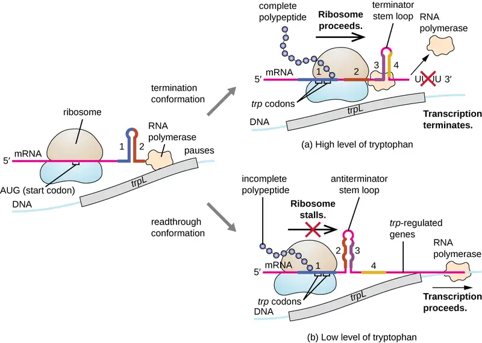
![a) The mRNA forms a loop called a riboswitch and a loop called an antiterminator stem loop. RNA polymerase can proceed transcription. This is labeled “on”. A small molecule binds to the mRNA at the riboswitch location. The shifts the second loop to the terminator stem loop position and no transcription occurs. This is labeled off. B) The mRNA forms a loop called a riboswitch and another unlabeled loop. The ribosome binds at the ribosome binding site after the second loop and a translation proceeds. This is “on”. A small molecule binds to the mRNA at the riboswitch location. The shifts the second loop to the ribosome binding site location with blocks this ribosome binding site. This is now “off”.](img/osc-microbio-11-07-riboswitch.webp)
Other Factors Affecting Gene Expression in Prokaryotes and Eukaryotes¶
Although the focus on our discussion of transcriptional control used prokaryotic operons as examples, eukaryotic transcriptional control is similar in many ways. As in prokaryotes, eukaryotic transcription can be controlled through the binding of transcription factors including repressors and activators. Interestingly, eukaryotic transcription can be influenced by the binding of proteins to regions of DNA, called enhancers, rather far away from the gene, through DNA looping facilitated between the enhancer and the promoter (Figure 11.40). Overall, regulating transcription is a highly effective way to control gene expression in both prokaryotes and eukaryotes. However, the control of gene expression in eukaryotes in response to environmental and cellular stresses can be accomplished in additional ways without the binding of transcription factors to regulatory regions.
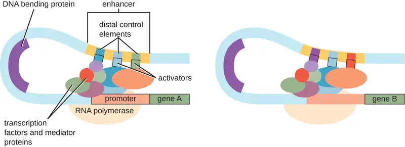
DNA-Level Control¶
In eukaryotes, the DNA molecules or associated histones can be chemically modified in such a way as to influence transcription; this is called epigenetic regulation. Methylation of certain cytosine nucleotides in DNA in response to environmental factors has been shown to influence use of such DNA for transcription, with DNA methylation commonly correlating to lowered levels of gene expression. Additionally, in response to environmental factors, histone proteins for packaging DNA can also be chemically modified in multiple ways, including acetylation and deacetylation, influencing the packaging state of DNA and thus affecting the availability of loosely wound DNA for transcription. These chemical modifications can sometimes be maintained through multiple rounds of cell division, making at least some of these epigenetic changes heritable.
Link to Learning
This video describes how epigenetic regulation controls gene expression.
Check Your Understanding
- What stops or allows transcription to proceed when attenuation is operating?
- What determines the state of a riboswitch?
- Describe the function of an enhancer.
- Describe two mechanisms of epigenetic regulation in eukaryotes.
Clinical Focus: Resolution
Although Mark survived his bout with necrotizing fasciitis, he would now have to undergo a skin-grafting surgery, followed by long-term physical therapy. Based on the amount of muscle mass he lost, it is unlikely that his leg will return to full strength, but his physical therapist is optimistic that he will regain some use of his leg.
Laboratory testing revealed the causative agent of Mark’s infection was a strain of Staphylococcus aureus. As required by law, Mark’s case was reported to the state health department and ultimately to the Centers for Disease Control and Prevention (CDC). At the CDC, the strain of Staphylococcus aureus strep isolated from Mark was analyzed more thoroughly for methicillin resistance.
Methicillin resistance is genetically coded and is increasing among strains of S. aureus through horizontal gene transfer. Strains of S. aureus that are resistant to methicillin are typically resistant to virtually all beta-lactam antibiotics and other classes of antibiotics as well. In necrotizing fasciitis, blood flow to the infected area is typically limited because of the action of various genetically encoded bacterial toxins. This is why there is typically little to no bleeding as a result of the incision test. Unfortunately, these bacterial toxins limit the effectiveness of intravenous antibiotics in clearing infection from the skin and underlying tissue, meaning that antibiotic resistance alone does not explain the ineffectiveness of Mark’s treatment. Nevertheless, intravenous antibiotic therapy was warranted to help minimize the possible outcome of sepsis, which is a common outcome of necrotizing fasciitis. Through genomic analysis by the CDC of the strain isolated from Mark, several of the important virulence genes were shown to be encoded within pathogenicity islands that were associated with prophages. Horizontal transfer of pathogenicity island-encoded virulence factors between strains of S. aureus has been shown to occur through induction of prophage and can be induced by treatment with antibiotics.
Go back to the previous Clinical Focus box.
Chapter Review¶
Key Concepts and Summary¶
11.1 The Functions of Genetic Material¶
- DNA serves two important cellular functions: It is the genetic material passed from parent to offspring and it serves as the information to direct and regulate the construction of the proteins necessary for the cell to perform all of its functions.
- The central dogma states that DNA organized into genes specifies the sequences of messenger RNA (mRNA), which, in turn, specifies the amino acid sequence of proteins.
- The genotype of a cell is the full collection of genes a cell contains. Not all genes are used to make proteins simultaneously. The phenotype is a cell’s observable characteristics resulting from the proteins it is producing at a given time under specific environmental conditions.
11.2 DNA Replication¶
- The DNA replication process is semiconservative, which results in two DNA molecules, each having one parental strand of DNA and one newly synthesized strand.
- In bacteria, the initiation of replication occurs at the origin of replication, where supercoiled DNA is unwound by DNA gyrase, made single-stranded by helicase, and bound by single-stranded binding protein to maintain its single-stranded state. Primase synthesizes a short RNA primer, providing a free 3’-OH group to which DNA polymerase III can add DNA nucleotides.
- During elongation, the leading strand of DNA is synthesized continuously from a single primer. The lagging strand is synthesized discontinuously in short Okazaki fragments, each requiring its own primer. The RNA primers are removed and replaced with DNA nucleotides by bacterial DNA polymerase I, and DNA ligase seals the gaps between these fragments.
- Termination of replication in bacteria involves the resolution of circular DNA concatemers by topoisomerase IV to release the two copies of the circular chromosome.
- Eukaryotes typically have multiple linear chromosomes, each with multiple origins of replication. Overall, replication in eukaryotes is similar to that in prokaryotes.
- The linear nature of eukaryotic chromosomes necessitates telomeres to protect genes near the end of the chromosomes. Telomerase extends telomeres, preventing their degradation, in some cell types.
- Rolling circle replication is a type of rapid unidirectional DNA synthesis of a circular DNA molecule used for the replication of some plasmids.
11.3 RNA Transcription¶
- During transcription, the information encoded in DNA is used to make RNA.
- RNA polymerase synthesizes RNA, using the antisense strand of the DNA as template by adding complementary RNA nucleotides to the 3’ end of the growing strand.
- RNA polymerase binds to DNA at a sequence called a promoter during the initiation of transcription.
- Genes encoding proteins of related functions are frequently transcribed under the control of a single promoter in prokaryotes, resulting in the formation of a polycistronic mRNA molecule that encodes multiple polypeptides.
- Unlike DNA polymerase, RNA polymerase does not require a 3’-OH group to add nucleotides, so a primer is not needed during initiation.
- Termination of transcription in bacteria occurs when the RNA polymerase encounters specific DNA sequences that lead to stalling of the polymerase. This results in release of RNA polymerase from the DNA template strand, freeing the RNA transcript.
- Eukaryotes have three different RNA polymerases. Eukaryotes also have monocistronic mRNA, each encoding only a single polypeptide.
- Eukaryotic primary transcripts are processed in several ways, including the addition of a 5’ cap and a 3′-poly-A tail, as well as splicing, to generate a mature mRNA molecule that can be transported out of the nucleus and that is protected from degradation.
11.4 Protein Synthesis (Translation)¶
- In translation, polypeptides are synthesized using mRNA sequences and cellular machinery, including tRNAs that match mRNA codons to specific amino acids and ribosomes composed of RNA and proteins that catalyze the reaction.
- The genetic code is degenerate in that several mRNA codons code for the same amino acids. The genetic code is almost universal among living organisms.
- Prokaryotic (70S) and cytoplasmic eukaryotic (80S) ribosomes are each composed of a large subunit and a small subunit of differing sizes between the two groups. Each subunit is composed of rRNA and protein. Organelle ribosomes in eukaryotic cells resemble prokaryotic ribosomes.
- Some 60 to 90 species of tRNA exist in bacteria. Each tRNA has a three-nucleotide anticodon as well as a binding site for a cognate amino acid. All tRNAs with a specific anticodon will carry the same amino acid.
- Initiation of translation occurs when the small ribosomal subunit binds with initiation factors and an initiator tRNA at the start codon of an mRNA, followed by the binding to the initiation complex of the large ribosomal subunit.
- In prokaryotic cells, the start codon codes for N-formyl-methionine carried by a special initiator tRNA. In eukaryotic cells, the start codon codes for methionine carried by a special initiator tRNA. In addition, whereas ribosomal binding of the mRNA in prokaryotes is facilitated by the Shine-Dalgarno sequence within the mRNA, eukaryotic ribosomes bind to the 5’ cap of the mRNA.
- During the elongation stage of translation, a charged tRNA binds to mRNA in the A site of the ribosome; a peptide bond is catalyzed between the two adjacent amino acids, breaking the bond between the first amino acid and its tRNA; the ribosome moves one codon along the mRNA; and the first tRNA is moved from the P site of the ribosome to the E site and leaves the ribosomal complex.
- Termination of translation occurs when the ribosome encounters a stop codon, which does not code for a tRNA. Release factors cause the polypeptide to be released, and the ribosomal complex dissociates.
- In prokaryotes, transcription and translation may be coupled, with translation of an mRNA molecule beginning as soon as transcription allows enough mRNA exposure for the binding of a ribosome, prior to transcription termination. Transcription and translation are not coupled in eukaryotes because transcription occurs in the nucleus, whereas translation occurs in the cytoplasm or in association with the rough endoplasmic reticulum.
- Polypeptides often require one or more post-translational modifications to become biologically active.
11.5 Mutations¶
- A mutation is a heritable change in DNA. A mutation may lead to a change in the amino-acid sequence of a protein, possibly affecting its function.
- A point mutation affects a single base pair. A point mutation may cause a silent mutation if the mRNA codon codes for the same amino acid, a missense mutation if the mRNA codon codes for a different amino acid, or a nonsense mutation if the mRNA codon becomes a stop codon.
- Missense mutations may retain function, depending on the chemistry of the new amino acid and its location in the protein. Nonsense mutations produce truncated and frequently nonfunctional proteins.
- A frameshift mutation results from an insertion or deletion of a number of nucleotides that is not a multiple of three. The change in reading frame alters every amino acid after the point of the mutation and results in a nonfunctional protein.
- Spontaneous mutations occur through DNA replication errors, whereas induced mutations occur through exposure to a mutagen.
- Mutagenic agents are frequently carcinogenic but not always. However, nearly all carcinogens are mutagenic.
- Chemical mutagens include base analogs and chemicals that modify existing bases. In both cases, mutations are introduced after several rounds of DNA replication.
- Ionizing radiation, such as X-rays and γ-rays, leads to breakage of the phosphodiester backbone of DNA and can also chemically modify bases to alter their base-pairing rules.
- Nonionizing radiation like ultraviolet light may introduce pyrimidine (thymine) dimers, which, during DNA replication and transcription, may introduce frameshift or point mutations.
- Cells have mechanisms to repair naturally occurring mutations. DNA polymerase has proofreading activity. Mismatch repair is a process to repair incorrectly incorporated bases after DNA replication has been completed.
- Pyrimidine dimers can also be repaired. In nucleotide excision repair (dark repair), enzymes recognize the distortion introduced by the pyrimidine dimer and replace the damaged strand with the correct bases, using the undamaged DNA strand as a template. Bacteria and other organisms may also use direct repair, in which the photolyase enzyme, in the presence of visible light, breaks apart the pyrimidines.
- Through comparison of growth on the complete plate and lack of growth on media lacking specific nutrients, specific loss-of-function mutants called auxotrophs can be identified.
- The Ames test is an inexpensive method that uses auxotrophic bacteria to measure mutagenicity of a chemical compound. Mutagenicity is an indicator of carcinogenic potential.
11.6 How Asexual Prokaryotes Achieve Genetic Diversity¶
- Horizontal gene transfer is an important way for asexually reproducing organisms like prokaryotes to acquire new traits.
- There are three mechanisms of horizontal gene transfer typically used by bacteria: transformation, transduction, and conjugation.
- Transformation allows for competent cells to take up naked DNA, released from other cells on their death, into their cytoplasm, where it may recombine with the host genome.
- In generalized transduction, any piece of chromosomal DNA may be transferred by accidental packaging of the degraded host chromosome into a phage head. In specialized transduction, only chromosomal DNA adjacent to the integration site of a lysogenic phage may be transferred as a result of imprecise excision of the prophage.
- Conjugation is mediated by the F plasmid, which encodes a conjugation pilus that brings an F plasmid-containing F+ cell into contact with an F-cell.
- The rare integration of the F plasmid into the bacterial chromosome, generating an Hfr cell, allows for transfer of chromosomal DNA from the donor to the recipient. Additionally, imprecise excision of the F plasmid from the chromosome may generate an F’ plasmid that may be transferred to a recipient by conjugation.
- Conjugation transfer of R plasmids is an important mechanism for the spread of antibiotic resistance in bacterial communities.
- Transposons are molecules of DNA with inverted repeats at their ends that also encode the enzyme transposase, allowing for their movement from one location in DNA to another. Although found in both prokaryotes and eukaryotes, transposons are clinically relevant in bacterial pathogens for the movement of virulence factors, including antibiotic resistance genes.
11.7 Gene Regulation: Operon Theory¶
- Gene expression is a tightly regulated process.
- Gene expression in prokaryotes is largely regulated at the point of transcription. Gene expression in eukaryotes is additionally regulated post-transcriptionally.
- Prokaryotic structural genes of related function are often organized into operons, all controlled by transcription from a single promoter. The regulatory region of an operon includes the promoter itself and the region surrounding the promoter to which transcription factors can bind to influence transcription.
- Although some operons are constitutively expressed, most are subject to regulation through the use of transcription factors (repressors and activators). A repressor binds to an operator, a DNA sequence within the regulatory region between the RNA polymerase binding site in the promoter and first structural gene, thereby physically blocking transcription of these operons. An activator binds within the regulatory region of an operon, helping RNA polymerase bind to the promoter, thereby enhancing the transcription of this operon. An inducer influences transcription through interacting with a repressor or activator.
- The trp operon is a classic example of a repressible operon. When tryptophan accumulates, tryptophan binds to a repressor, which then binds to the operator, preventing further transcription.
- The lac operon is a classic example an inducible operon. When lactose is present in the cell, it is converted to allolactose. Allolactose acts as an inducer, binding to the repressor and preventing the repressor from binding to the operator. This allows transcription of the structural genes.
- The lac operon is also subject to activation. When glucose levels are depleted, some cellular ATP is converted into cAMP, which binds to the catabolite activator protein (CAP). The cAMP-CAP complex activates transcription of the lac operon. When glucose levels are high, its presence prevents transcription of the lac operon and other operons by catabolite repression.
- Small intracellular molecules called alarmones are made in response to various environmental stresses, allowing bacteria to control the transcription of a group of operons, called a regulon.
- Bacteria have the ability to change which σ factor of RNA polymerase they use in response to environmental conditions to quickly and globally change which regulons are transcribed.
- Prokaryotes have regulatory mechanisms, including attenuation and the use of riboswitches, to simultaneously control the completion of transcription and translation from that transcript. These mechanisms work through the formation of stem loops in the 5’ end of an mRNA molecule currently being synthesized.
- There are additional points of regulation of gene expression in prokaryotes and eukaryotes. In eukaryotes, epigenetic regulation by chemical modification of DNA or histones, and regulation of RNA processing are two methods.
Multiple Choice¶
11.1 The Functions of Genetic Material¶
1. DNA does all but which of the following?
- serves as the genetic material passed from parent to offspring
- remains constant despite changes in environmental conditions
- provides the instructions for the synthesis of messenger RNA
- is read by ribosomes during the process of translation
Answer
D
2. According to the central dogma, which of the following represents the flow of genetic information in cells?
- protein to DNA to RNA
- DNA to RNA to protein
- RNA to DNA to protein
- DNA to protein to RNA
Answer
B
11.2 DNA Replication¶
3. Which of the following is the enzyme that replaces the RNA nucleotides in a primer with DNA nucleotides?
- DNA polymerase III
- DNA polymerase I
- primase
- helicase
Answer
B
4. Which of the following is not involved in the initiation of replication?
- ligase
- DNA gyrase
- single-stranded binding protein
- primase
Answer
A
5. Which of the following enzymes involved in DNA replication is unique to eukaryotes?
- helicase
- DNA polymerase
- ligase
- telomerase
Answer
D
6. Which of the following would be synthesized using 5′-CAGTTCGGA-3′ as a template?
- 3′-AGGCTTGAC-4′
- 3′-TCCGAACTG-5′
- 3′-GTCAAGCCT-5′
- 3′-CAGTTCGGA-5′
Answer
C
11.3 RNA Transcription¶
7. During which stage of bacterial transcription is the σ subunit of the RNA polymerase involved?
- initiation
- elongation
- termination
- splicing
Answer
A
8. Which of the following components is involved in the initiation of transcription?
- primer
- origin
- promoter
- start codon
Answer
C
9. Which of the following is not a function of the 5’ cap or 3’ poly-A tail of a mature eukaryotic mRNA molecule?
- to facilitate splicing
- to prevent mRNA degradation
- to aid export of the mature transcript to the cytoplasm
- to aid ribosome binding to the transcript
Answer
A
10. Mature mRNA from a eukaryote would contain each of these features except which of the following?
- exon-encoded RNA
- intron-encoded RNA
- 5’ cap
- 3’ poly-A tail
Answer
B
11.4 Protein Synthesis (Translation)¶
11. Which of the following is the name of the three-base sequence in the mRNA that binds to a tRNA molecule?
- P site
- codon
- anticodon
- CCA binding site
Answer
B
12. Which component is the last to join the initiation complex during the initiation of translation?
- the mRNA molecule
- the small ribosomal subunit
- the large ribosomal subunit
- the initiator tRNA
Answer
C
13. During elongation in translation, to which ribosomal site does an incoming charged tRNA molecule bind?
- A site
- P site
- E site
- B site
Answer
A
14. Which of the following is the amino acid that appears at the N-terminus of all newly translated prokaryotic and eukaryotic polypeptides?
- tryptophan
- methionine
- selenocysteine
- glycine
Answer
B
15. When the ribosome reaches a nonsense codon, which of the following occurs?
- a methionine is incorporated
- the polypeptide is released
- a peptide bond forms
- the A site binds to a charged tRNA
Answer
B
11.5 Mutations¶
16. Which of the following is a change in the sequence that leads to formation of a stop codon?
- missense mutation
- nonsense mutation
- silent mutation
- deletion mutation
Answer
B
17. The formation of pyrimidine dimers results from which of the following?
- spontaneous errors by DNA polymerase
- exposure to gamma radiation
- exposure to ultraviolet radiation
- exposure to intercalating agents
Answer
C
18. Which of the following is an example of a frameshift mutation?
- a deletion of a codon
- missense mutation
- silent mutation
- deletion of one nucleotide
Answer
D
19. Which of the following is the type of DNA repair in which thymine dimers are directly broken down by the enzyme photolyase?
- direct repair
- nucleotide excision repair
- mismatch repair
- proofreading
Answer
A
20. Which of the following regarding the Ames test is true?
- It is used to identify newly formed auxotrophic mutants.
- It is used to identify mutants with restored biosynthetic activity.
- It is used to identify spontaneous mutants.
- It is used to identify mutants lacking photoreactivation activity.
Answer
B
11.6 How Asexual Prokaryotes Achieve Genetic Diversity¶
21. Which is the mechanism by which improper excision of a prophage from a bacterial chromosome results in packaging of bacterial genes near the integration site into a phage head?
- conjugation
- generalized transduction
- specialized transduction
- transformation
Answer
C
22. Which of the following refers to the uptake of naked DNA from the surrounding environment?
- conjugation
- generalized transduction
- specialized transduction
- transformation
Answer
D
23. The F plasmid is involved in which of the following processes?
- conjugation
- transduction
- transposition
- transformation
Answer
A
24. Which of the following refers to the mechanism of horizontal gene transfer naturally responsible for the spread of antibiotic resistance genes within a bacterial population?
- conjugation
- generalized transduction
- specialized transduction
- transformation
Answer
A
11.7 Gene Regulation: Operon Theory¶
25. An operon of genes encoding enzymes in a biosynthetic pathway is likely to be which of the following?
- inducible
- repressible
- constitutive
- monocistronic
Answer
B
26. An operon encoding genes that are transcribed and translated continuously to provide the cell with constant intermediate levels of the protein products is said to be which of the following?
- repressible
- inducible
- constitutive
- activated
Answer
C
27. Which of the following conditions leads to maximal expression of the lac operon?
- lactose present, glucose absent
- lactose present, glucose present
- lactose absent, glucose absent
- lactose absent, glucose present
Answer
A
28. Which of the following is a type of regulation of gene expression unique to eukaryotes?
- attenuation
- use of alternate σ factor
- chemical modification of histones
- alarmones
Answer
C
True/False¶
11.1 The Functions of Genetic Material¶
29. Cells are always producing proteins from every gene they possess.
Answer
False
11.2 DNA Replication¶
30. More primers are used in lagging strand synthesis than in leading strand synthesis.
Answer
True
11.4 Protein Synthesis (Translation)¶
31. Each codon within the genetic code encodes a different amino acid.
Answer
False
11.5 Mutations¶
32. Carcinogens are typically mutagenic.
Answer
True
11.6 How Asexual Prokaryotes Achieve Genetic Diversity¶
33. Asexually reproducing organisms lack mechanisms for generating genetic diversity within a population.
Answer
False
Fill in the Blank¶
11.1 The Functions of Genetic Material¶
34. The process of making an RNA copy of a gene is called ________.
Answer
transcription
35. A cell’s ________ remains constant whereas its phenotype changes in response to environmental influences.
Answer
genotype or genome
11.2 DNA Replication¶
36. The enzyme responsible for relaxing supercoiled DNA to allow for the initiation of replication is called ________.
Answer
DNA gyrase or topoisomerase II
37. Unidirectional replication of a circular DNA molecule like a plasmid that involves nicking one DNA strand and displacing it while synthesizing a new strand is called ________.
Answer
rolling circle replication
11.3 RNA Transcription¶
38. A ________ mRNA is one that codes for multiple polypeptides.
Answer
polycistronic
39. The protein complex responsible for removing intron-encoded RNA sequences from primary transcripts in eukaryotes is called the ________.
Answer
Spliceosome
11.4 Protein Synthesis (Translation)¶
40. The third position within a codon, in which changes often result in the incorporation of the same amino acid into the growing polypeptide, is called the ________.
Answer
wobble position
41. The enzyme that adds an amino acid to a tRNA molecule is called ________.
Answer
aminoacyl-tRNA synthetase
11.5 Mutations¶
42. A chemical mutagen that is structurally similar to a nucleotide but has different base-pairing rules is called a ________.
Answer
nucleoside analog
43. The enzyme used in light repair to split thymine dimers is called ________.
Answer
photolyase
44. The phenotype of an organism that is most commonly observed in nature is called the ________.
Answer
wild type
11.6 How Asexual Prokaryotes Achieve Genetic Diversity¶
45. A small DNA molecule that has the ability to independently excise from one location in a larger DNA molecule and integrate into the DNA elsewhere is called a ________.
Answer
transposon or transposable element
46. ________ is a group of mechanisms that allow for the introduction of genetic material from one organism to another organism within the same generation.
Answer
Horizontal gene transfer
11.7 Gene Regulation: Operon Theory¶
47. The DNA sequence, to which repressors may bind, that lies between the promoter and the first structural gene is called the ________.
Answer
operator
48. The prevention of expression of operons encoding substrate use pathways for substrates other than glucose when glucose is present is called _______.
Answer
catabolite repression
Short Answer¶
11.1 The Functions of Genetic Material¶
49. Can two observably different cells have the same genotype? Explain.
11.2 DNA Replication¶
50. Why is primase required for DNA replication?
51. What is the role of single-stranded binding protein in DNA replication?
52. Below is a DNA sequence. Envision that this is a section of a DNA molecule that has separated in preparation for replication, so you are only seeing one DNA strand. Construct the complementary DNA sequence (indicating 5’ and 3’ ends).
DNA sequence: 3’-T A C T G A C T G A C G A T C-5’
11.3 RNA Transcription¶
53. What is the purpose of RNA processing in eukaryotes? Why don’t prokaryotes require similar processing?
54. Below is a DNA sequence. Envision that this is a section of a DNA molecule that has separated in preparation for transcription, so you are only seeing the antisense strand. Construct the mRNA sequence transcribed from this template.
Antisense DNA strand: 3’-T A C T G A C T G A C G A T C-5’
11.4 Protein Synthesis (Translation)¶
55. Why does translation terminate when the ribosome reaches a stop codon? What happens?
56. How does the process of translation differ between prokaryotes and eukaryotes?
57. What is meant by the genetic code being nearly universal?
58. Below is an antisense DNA sequence. Translate the mRNA molecule synthesized using the genetic code, recording the resulting amino acid sequence, indicating the N and C termini.
Antisense DNA strand: 3’-T A C T G A C T G A C G A T C-5’
11.5 Mutations¶
59. Why is it more likely that insertions or deletions will be more detrimental to a cell than point mutations?
11.6 How Asexual Prokaryotes Achieve Genetic Diversity¶
60. Briefly describe two ways in which chromosomal DNA from a donor cell may be transferred to a recipient cell during the process of conjugation.
61. Describe what happens when a nonsense mutation is introduced into the gene encoding transposase within a transposon.
11.7 Gene Regulation: Operon Theory¶
62. What are two ways that bacteria can influence the transcription of multiple different operons simultaneously in response to a particular environmental condition?
Critical Thinking¶
11.1 The Functions of Genetic Material¶
63. A pure culture of an unknown bacterium was streaked onto plates of a variety of media. You notice that the colony morphology is strikingly different on plates of minimal media with glucose compared to that seen on trypticase soy agar plates. How can you explain these differences in colony morphology?
11.2 DNA Replication¶
64. Review Figure 11.4 and Figure 11.5. Why was it important that Meselson and Stahl continue their experiment to at least two rounds of replication after isotopic labeling of the starting DNA with 15N, instead of stopping the experiment after only one round of replication?
65. If deoxyribonucleotides that lack the 3’-OH groups are added during the replication process, what do you expect will occur?
11.3 RNA Transcription¶
66. Predict the effect of an alteration in the sequence of nucleotides in the –35 region of a bacterial promoter.
11.4 Protein Synthesis (Translation)¶
67. Label the following in the figure: ribosomal E, P, and A sites; mRNA; codons; anticodons; growing polypeptide; incoming amino acid; direction of translocation; small ribosomal unit; large ribosomal unit.
![A long line at the bottom has many letters on it and is labeled G. Each set of 3 letters is circles and labeled D. Attached to this is a large dome (I) and a small oval (3). Attached to one group of 3 letters is a rectangle 9labeled C); the 3 letters at the bottom of the rectangle are labeled H. A circle at the end of the rectangle is labeled B. The rectangle in the center of the dome labeled I has a long chain of circles attached to it labeled A. An arrow at the bottom points to the right and is labeled F.](img/osc-microbio-11-04-transcomp-img.webp)
68. Prior to the elucidation of the genetic code, prominent scientists, including Francis Crick, had predicted that each mRNA codon, coding for one of the 20 amino acids, needed to be at least three nucleotides long. Why is it not possible for codons to be any shorter?
11.5 Mutations¶
69. Below are several DNA sequences that are mutated compared with the wild-type sequence: 3’-T A C T G A C T G A C G A T C-5’. Envision that each is a section of a DNA molecule that has separated in preparation for transcription, so you are only seeing the template strand. Construct the complementary DNA sequences (indicating 5’ and 3’ ends) for each mutated DNA sequence, then transcribe (indicating 5’ and 3’ ends) the template strands, and translate the mRNA molecules using the genetic code, recording the resulting amino acid sequence (indicating the N and C termini). What type of mutation is each?
| Mutated DNA Template Strand #1: 3’-T A C T G T C T G A C G A T C-5’ Complementary DNA sequence: mRNA sequence transcribed from template: Amino acid sequence of peptide: Type of mutation: |
| Mutated DNA Template Strand #2: 3’-T A C G G A C T G A C G A T C-5’ Complementary DNA sequence: mRNA sequence transcribed from template: Amino acid sequence of peptide: Type of mutation: |
| Mutated DNA Template Strand #3: 3’-T A C T G A C T G A C T A T C-5’ Complementary DNA sequence: mRNA sequence transcribed from template: Amino acid sequence of peptide: Type of mutation: |
| Mutated DNA Template Strand #4: 3’-T A C G A C T G A C T A T C-5’ Complementary DNA sequence: mRNA sequence transcribed from template: Amino acid sequence of peptide: Type of mutation: |
70. Why do you think the Ames test is preferable to the use of animal models to screen chemical compounds for mutagenicity?
11.7 Gene Regulation: Operon Theory¶
71. The following figure is from Monod’s original work on diauxic growth showing the growth of E. coli in the simultaneous presence of xylose and glucose as the only carbon sources. Explain what is happening at points A–D with respect to the carbon source being used for growth, and explain whether the xylose-use operon is being expressed (and why). Note that expression of the enzymes required for xylose use is regulated in a manner similar to the expression of the enzymes required for lactose use.
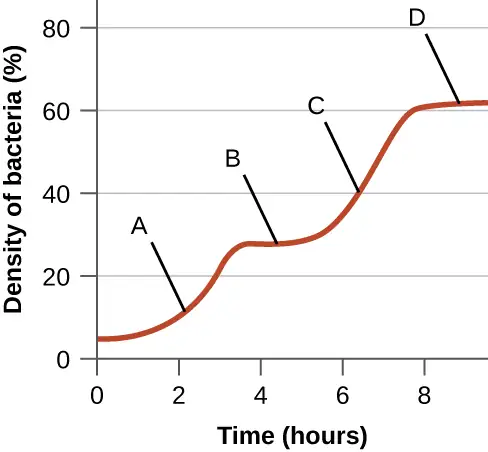
Adapted from Microbiology by OpenStax, licensed under CC BY 4.0. Access the original for free at openstax.org. Changes: converted to the web reading format of The Open Book Project.
-
D.J. Edwards, K.E. Holt. “Beginner’s Guide to Comparative Bacterial Genome Analysis Using Next-Generation Sequence Data.” Microbial Informatics and Experimentation 3 no. 1 (2013):2. ↩
-
World Health Organization. “ Global Health Observatory (GHO) Data, HIV/AIDS.” http://www.who.int/gho/hiv/en/. Accessed August 5, 2016. ↩
-
World Health Organization. “ Global Health Observatory (GHO) Data, HIV/AIDS.” http://www.who.int/gho/hiv/en/. Accessed August 5, 2016. ↩
-
K.R. Tindall et al. “Changes in DNA Base Sequence Induced by Gamma-Ray Mutagenesis of Lambda Phage and Prophage.” Genetics 118 no. 4 (1988):551–560. ↩